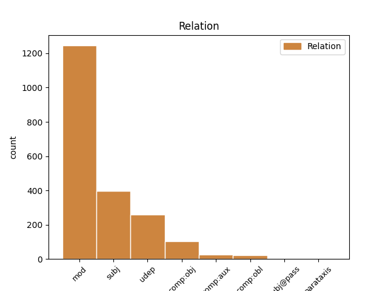
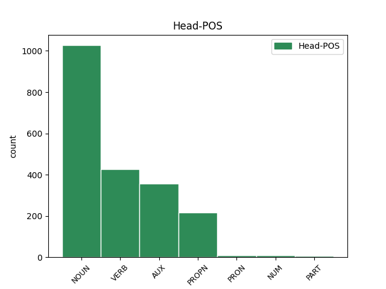
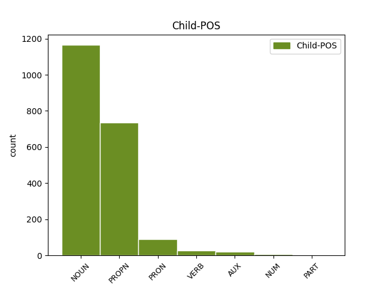

Distribution of features within this leaf



Agreement Rules sorted by frequency.
- When the dependent token is the modifer(mod) of the head token, and the head token is NOUN and the dependent token is NOUN.
1 அந்தத் _ _ _ _ 0 _ _ _
2 தொகையைப் _ _ _ _ 0 _ _ _
3 பயன்படுத்திக் _ _ _ _ 0 _ _ _
4 கொண்டு _ _ _ _ 0 _ _ _
5 , _ _ _ _ 0 _ _ _
6 நம்முடைய _ _ _ _ 0 _ _ _
7 சட்டப் _ _ _ _ 0 _ _ _
8 பேரவை _ _ _ _ 0 _ _ _
9 உறுப்பினர்கள் _ _ _ _ 0 _ _ _
10 தொகுதிப் தொகுதி NOUN NNN-3SN-- Case=Nom|Gender=Neut|Number=Sing|Person=3 11 mod _ LTranslit=tokuti|Translit=tokutip
11 பணிகளை பணி NOUN NNA-3PN-- Case=Acc|Gender=Neut|Number=Plur|Person=3 0 _ _ _
12 ஆற்றிக் _ _ _ _ 0 _ _ _
13 கொண்ட் _ _ _ _ 0 _ _ _
14 இருக்கிறார்கள் _ _ _ _ 0 _ _ _
15 . _ _ _ _ 0 _ _ _
1 அந்தப் _ _ _ _ 0 _ _ _
2 பணியை _ _ _ _ 0 _ _ _
3 மனித _ _ _ _ 0 _ _ _
4 நேய நேயம் PROPN NO--3SN-- Gender=Neut|Number=Sing|Person=3 5 mod _ LTranslit=nēyam|Translit=nēya
5 மனப்பான்மையோடு மனப்பான்மை NOUN NNS-3SN-- Case=Com|Gender=Neut|Number=Sing|Person=3 0 _ _ _
6 நாம் _ _ _ _ 0 _ _ _
7 நிறைவேற்றுவோம் _ _ _ _ 0 _ _ _
8 என்ற _ _ _ _ 0 _ _ _
9 அந்த _ _ _ _ 0 _ _ _
10 உணர்வைப் _ _ _ _ 0 _ _ _
11 பெற்று _ _ _ _ 0 _ _ _
12 மக்களைக் _ _ _ _ 0 _ _ _
13 காப்பாற்ற _ _ _ _ 0 _ _ _
14 வேண்டும் _ _ _ _ 0 _ _ _
15 - _ _ _ _ 0 _ _ _
16 மக்களுக்குப் _ _ _ _ 0 _ _ _
17 பணியாற்ற _ _ _ _ 0 _ _ _
18 வேண்டும் _ _ _ _ 0 _ _ _
19 . _ _ _ _ 0 _ _ _
1 அந்தக் _ _ _ _ 0 _ _ _
2 கட்டடங்களில் _ _ _ _ 0 _ _ _
3 ஏய் _ _ _ _ 0 _ _ _
4 இருந்து _ _ _ _ 0 _ _ _
5 பணியாற்றுகிற _ _ _ _ 0 _ _ _
6 மருத்துவர்கள் _ _ _ _ 0 _ _ _
7 , _ _ _ _ 0 _ _ _
8 அந்த _ _ _ _ 0 _ _ _
9 மருத்துவர்களுக்கு _ _ _ _ 0 _ _ _
10 உதவியாக _ _ _ _ 0 _ _ _
11 இருக்கிற _ _ _ _ 0 _ _ _
12 செவிலியர்கள் _ _ _ _ 0 _ _ _
13 உள்ளிட்ட _ _ _ _ 0 _ _ _
14 மற்ற _ _ _ _ 0 _ _ _
15 மருத்துவத்துறை _ _ _ _ 0 _ _ _
16 நண்பர்கள் _ _ _ _ 0 _ _ _
17 அனைவரும் _ _ _ _ 0 _ _ _
18 ஏத் _ _ _ _ 0 _ _ _
19 ஓ _ _ _ _ 0 _ _ _
20 ஒரு _ _ _ _ 0 _ _ _
21 கடமை _ _ _ _ 0 _ _ _
22 ஆற்றுகிறோம் _ _ _ _ 0 _ _ _
23 என்று _ _ _ _ 0 _ _ _
24 இல்லாமல் _ _ _ _ 0 _ _ _
25 இந்தப் _ _ _ _ 0 _ _ _
26 பணி பணி NOUN NNN-3SN-- Case=Nom|Gender=Neut|Number=Sing|Person=3 30 subj _ LTranslit=paṇi|Translit=paṇi
27 நம்மை _ _ _ _ 0 _ _ _
28 வந்து _ _ _ _ 0 _ _ _
29 அடைந்த் _ _ _ _ 0 _ _ _
30 இருக்கிறது இரு AUX VR-P3SNAA Gender=Neut|Mood=Ind|Number=Sing|Person=3|Polarity=Pos|Tense=Pres|VerbForm=Fin|Voice=Act 0 _ _ _
31 . _ _ _ _ 0 _ _ _
1 சென்னையில் _ _ _ _ 0 _ _ _
2 கஸ்தூரிபா _ _ _ _ 0 _ _ _
3 காந்தி _ _ _ _ 0 _ _ _
4 தாய் _ _ _ _ 0 _ _ _
5 சேய் _ _ _ _ 0 _ _ _
6 நல _ _ _ _ 0 _ _ _
7 மருத்துவமனையின் _ _ _ _ 0 _ _ _
8 125-ம் _ _ _ _ 0 _ _ _
9 ஆண்டு _ _ _ _ 0 _ _ _
10 விழா _ _ _ _ 0 _ _ _
11 - _ _ _ _ 0 _ _ _
12 சேப்பாக்கம் _ _ _ _ 0 _ _ _
13 சட்டப் _ _ _ _ 0 _ _ _
14 பேரவை _ _ _ _ 0 _ _ _
15 உறுப்பினர் _ _ _ _ 0 _ _ _
16 தொகுதி _ _ _ _ 0 _ _ _
17 மேம்பாட்டு _ _ _ _ 0 _ _ _
18 நிதிய் _ _ _ _ 0 _ _ _
19 இலிருந்து _ _ _ _ 0 _ _ _
20 கட்டப்பட்ட _ _ _ _ 0 _ _ _
21 கட்டடங்களின் _ _ _ _ 0 _ _ _
22 திறப்பு _ _ _ _ 0 _ _ _
23 விழா _ _ _ _ 0 _ _ _
24 - _ _ _ _ 0 _ _ _
25 இதய _ _ _ _ 0 _ _ _
26 நோய் _ _ _ _ 0 _ _ _
27 மற்றும் _ _ _ _ 0 _ _ _
28 மகளிர் _ _ _ _ 0 _ _ _
29 கருப்பை _ _ _ _ 0 _ _ _
30 வாய் _ _ _ _ 0 _ _ _
31 , _ _ _ _ 0 _ _ _
32 மார்பகப் _ _ _ _ 0 _ _ _
33 புற்றுநோய்த் _ _ _ _ 0 _ _ _
34 தடுப்புத் _ _ _ _ 0 _ _ _
35 திட்டங்களை _ _ _ _ 0 _ _ _
36 வியாழக்கிழமை _ _ _ _ 0 _ _ _
37 தொடங்கி _ _ _ _ 0 _ _ _
38 வைத்து _ _ _ _ 0 _ _ _
39 முதல்வர் முதல்வர் NOUN NNN-3SH-- Case=Nom|Gender=Com|Number=Sing|Person=3|Polite=Form 40 mod _ LTranslit=mutalvar|Translit=mutalvar
40 கருணாநிதி கருணாநிதி PROPN NEN-3SH-- Case=Nom|Gender=Com|Number=Sing|Person=3|Polite=Form 0 _ _ _
41 பேசியத் _ _ _ _ 0 _ _ _
42 ஆவது _ _ _ _ 0 _ _ _
43 : _ _ _ _ 0 _ _ _
44 . _ _ _ _ 0 _ _ _
1 அரசுக்கு அரசு NOUN NND-3SN-- Case=Dat|Gender=Neut|Number=Sing|Person=3 3 udep _ LTranslit=aracu|Translit=aracukku
2 ஒத்துழைக்க _ _ _ _ 0 _ _ _
3 வேண்டும் வேண்டு AUX VR-F3SNAA Gender=Neut|Mood=Ind|Number=Sing|Person=3|Polarity=Pos|Tense=Fut|VerbForm=Fin|Voice=Act 0 _ _ _
4 என _ _ _ _ 0 _ _ _
5 மருத்துவர்கள் _ _ _ _ 0 _ _ _
6 , _ _ _ _ 0 _ _ _
7 செவிலியர்கள் _ _ _ _ 0 _ _ _
8 உள்ளிட்ட _ _ _ _ 0 _ _ _
9 மருத்துவப் _ _ _ _ 0 _ _ _
10 பணியாளர்கள் _ _ _ _ 0 _ _ _
11 யாரையும் _ _ _ _ 0 _ _ _
12 கேட்கவ் _ _ _ _ 0 _ _ _
13 இல்லை _ _ _ _ 0 _ _ _
14 . _ _ _ _ 0 _ _ _
1 அரசுக்கு அரசு NOUN NND-3SN-- Case=Dat|Gender=Neut|Number=Sing|Person=3 3 subj _ LTranslit=aracu|Translit=aracukku
2 ஒத்துழைப்பு _ _ _ _ 0 _ _ _
3 வேண்டாம் வேண்டு VERB Vr-T3PNAA Gender=Neut|Mood=Ind|Number=Plur|Person=3|Polarity=Pos|VerbForm=Fin|Voice=Act 0 _ _ _
4 : _ _ _ _ 0 _ _ _
5 . _ _ _ _ 0 _ _ _
1 போக்குவரத்து _ _ _ _ 0 _ _ _
2 வசதிகள் _ _ _ _ 0 _ _ _
3 இல்லாததால் _ _ _ _ 0 _ _ _
4 அரசு _ _ _ _ 0 _ _ _
5 அலுவலகங்களில் அலுவலகம் NOUN NNL-3PN-- Case=Loc|Gender=Neut|Number=Plur|Person=3 9 udep _ LTranslit=aluvalakam|Translit=aluvalakaṅkaḷil
6 உம் _ _ _ _ 0 _ _ _
7 வருகை _ _ _ _ 0 _ _ _
8 குறைவாகவே _ _ _ _ 0 _ _ _
9 இருந்தத் இரு VERB VzND3SNAA Case=Nom|Gender=Neut|Number=Sing|Person=3|Polarity=Pos|Tense=Past|VerbForm=Ger|Voice=Act 0 _ _ _
10 ஆக _ _ _ _ 0 _ _ _
11 அதிகார _ _ _ _ 0 _ _ _
12 வட்டாரங்கள் _ _ _ _ 0 _ _ _
13 தெரிவித்தன _ _ _ _ 0 _ _ _
14 . _ _ _ _ 0 _ _ _
1 கோவை _ _ _ _ 0 _ _ _
2 தமிழ்நாடு தமிழ்நாடு PROPN NEN-3SN-- Case=Nom|Gender=Neut|Number=Sing|Person=3 3 mod _ LTranslit=tamilnāṭu|Translit=tamilnāṭu
3 ஹோட்டல் ஹோட்டல் PROPN NEN-3SN-- Case=Nom|Gender=Neut|Number=Sing|Person=3 0 _ _ _
4 அருகே _ _ _ _ 0 _ _ _
5 மதிமுக _ _ _ _ 0 _ _ _
6 பொதுச்செயலர் _ _ _ _ 0 _ _ _
7 வைகோ _ _ _ _ 0 _ _ _
8 தலைமையில் _ _ _ _ 0 _ _ _
9 நடந்த _ _ _ _ 0 _ _ _
10 ஆர்ப்பாட்டத்தில் _ _ _ _ 0 _ _ _
11 ராஜபட்சவின் _ _ _ _ 0 _ _ _
12 உருவப் _ _ _ _ 0 _ _ _
13 பொம்மைகள் _ _ _ _ 0 _ _ _
14 எரிக்கப் _ _ _ _ 0 _ _ _
15 பட்டன _ _ _ _ 0 _ _ _
16 . _ _ _ _ 0 _ _ _
1 மனித _ _ _ _ 0 _ _ _
2 நேயத்துடன் _ _ _ _ 0 _ _ _
3 பணியாற்ற _ _ _ _ 0 _ _ _
4 வேண்டும் _ _ _ _ 0 _ _ _
5 என்று _ _ _ _ 0 _ _ _
6 டாக்டர்கள் _ _ _ _ 0 _ _ _
7 மற்றும் _ _ _ _ 0 _ _ _
8 செவிலியர்களுக்கு _ _ _ _ 0 _ _ _
9 முதல்வர் _ _ _ _ 0 _ _ _
10 கருணாநிதி கருணாநிதி PROPN NEN-3SH-- Case=Nom|Gender=Com|Number=Sing|Person=3|Polite=Form 12 subj _ LTranslit=karuṇāniti|Translit=karuṇāniti
11 வேண்டுகோள் _ _ _ _ 0 _ _ _
12 விடுத்தார் விடு VERB Vr-D3SHAA Gender=Com|Mood=Ind|Number=Sing|Person=3|Polarity=Pos|Polite=Form|Tense=Past|VerbForm=Fin|Voice=Act 0 _ _ _
13 . _ _ _ _ 0 _ _ _
1 தில்லியில் _ _ _ _ 0 _ _ _
2 இன்று _ _ _ _ 0 _ _ _
3 நடைபெறும் _ _ _ _ 0 _ _ _
4 காமன்வெல்த் _ _ _ _ 0 _ _ _
5 போட்டி _ _ _ _ 0 _ _ _
6 இறுதிநாள் _ _ _ _ 0 _ _ _
7 நிகழ்ச்சியில் _ _ _ _ 0 _ _ _
8 சிறப்பு _ _ _ _ 0 _ _ _
9 விருந்தினர் _ _ _ _ 0 _ _ _
10 ஆகக் _ _ _ _ 0 _ _ _
11 கலந்து _ _ _ _ 0 _ _ _
12 கொள்வதற்க் _ _ _ _ 0 _ _ _
13 ஆக _ _ _ _ 0 _ _ _
14 இலங்கை _ _ _ _ 0 _ _ _
15 அதிபர் _ _ _ _ 0 _ _ _
16 ராஜபட்ச ராஜபட்ச PROPN NEN-3SH-- Case=Nom|Gender=Com|Number=Sing|Person=3|Polite=Form 19 subj _ LTranslit=rājapaṭca|Translit=rājapaṭca
17 அழைக்க _ _ _ _ 0 _ _ _
18 ப்பட்ட் _ _ _ _ 0 _ _ _
19 இருக்கிறார் இரு AUX VR-P3SHAA Gender=Com|Mood=Ind|Number=Sing|Person=3|Polarity=Pos|Polite=Form|Tense=Pres|VerbForm=Fin|Voice=Act 0 _ _ _
20 . _ _ _ _ 0 _ _ _
1 அரசுக்கு _ _ _ _ 0 _ _ _
2 ஒத்துழைப்பு ஒத்துழைப்பு NOUN NNN-3SN-- Case=Nom|Gender=Neut|Number=Sing|Person=3 3 comp:obj _ LTranslit=ottulaippu|Translit=ottulaippu
3 வேண்டாம் வேண்டு VERB Vr-T3PNAA Gender=Neut|Mood=Ind|Number=Plur|Person=3|Polarity=Pos|VerbForm=Fin|Voice=Act 0 _ _ _
4 : _ _ _ _ 0 _ _ _
5 . _ _ _ _ 0 _ _ _
1 மேலும் _ _ _ _ 0 _ _ _
2 , _ _ _ _ 0 _ _ _
3 இந்தியர்களை _ _ _ _ 0 _ _ _
4 அவமானப்படுத்தும் _ _ _ _ 0 _ _ _
5 விதத்தில் _ _ _ _ 0 _ _ _
6 உம் _ _ _ _ 0 _ _ _
7 அவர் அவர் PRON RpN-3SH-- Case=Nom|Gender=Com|Number=Sing|Person=3|Polite=Form|PronType=Prs 8 subj _ LTranslit=avar|Translit=avar
8 பேசினார் பேசு VERB Vr-D3SHAA Gender=Com|Mood=Ind|Number=Sing|Person=3|Polarity=Pos|Polite=Form|Tense=Past|VerbForm=Fin|Voice=Act 0 _ _ _
9 . _ _ _ _ 0 _ _ _
1 பால் _ _ _ _ 0 _ _ _
2 ஹென்றி _ _ _ _ 0 _ _ _
3 , _ _ _ _ 0 _ _ _
4 கடந்த _ _ _ _ 0 _ _ _
5 வாரம் வாரம் NOUN NNN-3SN-- Case=Nom|Gender=Neut|Number=Sing|Person=3 8 udep _ LTranslit=vāram|Translit=vāram
6 ஒரு _ _ _ _ 0 _ _ _
7 டி.வி. _ _ _ _ 0 _ _ _
8 நிகழ்ச்சியில் நிகழ்ச்சி NOUN NNL-3SN-- Case=Loc|Gender=Neut|Number=Sing|Person=3 0 _ _ _
9 தில்லி _ _ _ _ 0 _ _ _
10 முதல்வர் _ _ _ _ 0 _ _ _
11 ஷீலா _ _ _ _ 0 _ _ _
12 தீட்சித்தின் _ _ _ _ 0 _ _ _
13 பெயரை _ _ _ _ 0 _ _ _
14 கேலியாக _ _ _ _ 0 _ _ _
15 உச்சரித்தார் _ _ _ _ 0 _ _ _
16 . _ _ _ _ 0 _ _ _
1 முதலில் _ _ _ _ 0 _ _ _
2 அது அது PRON RpN-3SN-- Case=Nom|Gender=Neut|Number=Sing|Person=3|PronType=Prs 6 subj _ LTranslit=atu|Translit=atu
3 25 _ _ _ _ 0 _ _ _
4 லட்சமாக _ _ _ _ 0 _ _ _
5 ஒதுக்கப் _ _ _ _ 0 _ _ _
6 பட்டது படு AUX VR-D3SNPA Gender=Neut|Mood=Ind|Number=Sing|Person=3|Polarity=Pos|Tense=Past|VerbForm=Fin|Voice=Pass 0 _ _ _
7 . _ _ _ _ 0 _ _ _
1 மனித _ _ _ _ 0 _ _ _
2 நேயத்துடன் _ _ _ _ 0 _ _ _
3 பணியாற்ற _ _ _ _ 0 _ _ _
4 வேண்டும் _ _ _ _ 0 _ _ _
5 என்று _ _ _ _ 0 _ _ _
6 டாக்டர்கள் டாக்டர் NOUN NNN-3PA-- Animacy=Anim|Case=Nom|Gender=Com|Number=Plur|Person=3 12 mod _ LTranslit=ṭākṭar|Translit=ṭākṭarkaḷ
7 மற்றும் _ _ _ _ 0 _ _ _
8 செவிலியர்களுக்கு _ _ _ _ 0 _ _ _
9 முதல்வர் _ _ _ _ 0 _ _ _
10 கருணாநிதி _ _ _ _ 0 _ _ _
11 வேண்டுகோள் _ _ _ _ 0 _ _ _
12 விடுத்தார் விடு VERB Vr-D3SHAA Gender=Com|Mood=Ind|Number=Sing|Person=3|Polarity=Pos|Polite=Form|Tense=Past|VerbForm=Fin|Voice=Act 0 _ _ _
13 . _ _ _ _ 0 _ _ _
1 மணிப்பூர் _ _ _ _ 0 _ _ _
2 இந்தியாவ் _ _ _ _ 0 _ _ _
3 உடன் _ _ _ _ 0 _ _ _
4 இணைக்கப் _ _ _ _ 0 _ _ _
5 பட்டதற்கு _ _ _ _ 0 _ _ _
6 எதிர்ப்பு _ _ _ _ 0 _ _ _
7 தெரிவித்து _ _ _ _ 0 _ _ _
8 கடந்த _ _ _ _ 0 _ _ _
9 20 _ _ _ _ 0 _ _ _
10 ஆண்டுகள் _ _ _ _ 0 _ _ _
11 ஆக _ _ _ _ 0 _ _ _
12 அக்டோபர் _ _ _ _ 0 _ _ _
13 15-ம் _ _ _ _ 0 _ _ _
14 தேதி _ _ _ _ 0 _ _ _
15 பொது _ _ _ _ 0 _ _ _
16 வேலைநிறுத்தத்துக்கு _ _ _ _ 0 _ _ _
17 தீவிரவாத _ _ _ _ 0 _ _ _
18 குழுக்கள் _ _ _ _ 0 _ _ _
19 அழைப்பு அழைப்பு NOUN NNN-3SN-- Case=Nom|Gender=Neut|Number=Sing|Person=3 21 comp:aux _ LTranslit=alaippu|Translit=alaippu
20 விடுத்து _ _ _ _ 0 _ _ _
21 வருகின்றன வரு AUX VR-P3PNAA Gender=Neut|Mood=Ind|Number=Plur|Person=3|Polarity=Pos|Tense=Pres|VerbForm=Fin|Voice=Act 0 _ _ _
22 . _ _ _ _ 0 _ _ _
1 இதன்படி _ _ _ _ 0 _ _ _
2 இந்தியாவுக்கு இந்தியா PROPN NED-3SN-- Case=Dat|Gender=Neut|Number=Sing|Person=3 6 subj _ LTranslit=intiyā|Translit=intiyāvukku
3 128 _ _ _ _ 0 _ _ _
4 நாடுகளின் _ _ _ _ 0 _ _ _
5 ஆதரவு _ _ _ _ 0 _ _ _
6 தேவை தேவை NOUN NNN-3SN-- Case=Nom|Gender=Neut|Number=Sing|Person=3 0 _ _ _
7 . _ _ _ _ 0 _ _ _
1 இதனால் _ _ _ _ 0 _ _ _
2 சென்னையில் _ _ _ _ 0 _ _ _
3 வசிக்கும் _ _ _ _ 0 _ _ _
4 தென்மாவட்டங்களைச் _ _ _ _ 0 _ _ _
5 சேர்ந்தவர்கள் _ _ _ _ 0 _ _ _
6 ஜனவரி _ _ _ _ 0 _ _ _
7 12-ம் _ _ _ _ 0 _ _ _
8 தேதியன்றே _ _ _ _ 0 _ _ _
9 சொந்த _ _ _ _ 0 _ _ _
10 ஊர்களுக்குச் ஊர் NOUN NND-3SN-- Case=Dat|Gender=Neut|Number=Sing|Person=3 11 comp:obl _ LTranslit=ūr|Translit=ūrkaḷukkuc
11 செல்வதற்க் செல் VERB VzDF3SNAA Case=Dat|Gender=Neut|Number=Sing|Person=3|Polarity=Pos|Tense=Fut|VerbForm=Ger|Voice=Act 0 _ _ _
12 ஆக _ _ _ _ 0 _ _ _
13 ரயில்களில் _ _ _ _ 0 _ _ _
14 முன்பதிவு _ _ _ _ 0 _ _ _
15 செய்யக் _ _ _ _ 0 _ _ _
16 காத்திருந்தனர் _ _ _ _ 0 _ _ _
17 . _ _ _ _ 0 _ _ _
1 அரசுக்கு _ _ _ _ 0 _ _ _
2 ஒத்துழைக்க _ _ _ _ 0 _ _ _
3 வேண்டும் _ _ _ _ 0 _ _ _
4 என _ _ _ _ 0 _ _ _
5 மருத்துவர்கள் மருத்துவர் NOUN NNN-3PA-- Animacy=Anim|Case=Nom|Gender=Com|Number=Plur|Person=3 11 mod _ LTranslit=maruttuvar|SpaceAfter=No|Translit=maruttuvarkaḷ
6 , _ _ _ _ 0 _ _ _
7 செவிலியர்கள் _ _ _ _ 0 _ _ _
8 உள்ளிட்ட _ _ _ _ 0 _ _ _
9 மருத்துவப் _ _ _ _ 0 _ _ _
10 பணியாளர்கள் _ _ _ _ 0 _ _ _
11 யாரையும் யார் PRON RBA-3SA-- Animacy=Anim|Case=Acc|Gender=Com|Number=Sing|Person=3|PronType=Ind 0 _ _ _
12 கேட்கவ் _ _ _ _ 0 _ _ _
13 இல்லை _ _ _ _ 0 _ _ _
14 . _ _ _ _ 0 _ _ _
1 1949 _ _ _ _ 0 _ _ _
2 அக்டோபர் அக்டோபர் NOUN NNN-3SN-- Case=Nom|Gender=Neut|Number=Sing|Person=3 3 mod _ LTranslit=akṭōpar|Translit=akṭōpar
3 15-ல் 15-ல் NUM U=L-3SN-A Case=Loc|Gender=Neut|Number=Sing|NumForm=Digit|Person=3|Polarity=Pos 0 _ _ _
4 இந்தியாவ் _ _ _ _ 0 _ _ _
5 உடன் _ _ _ _ 0 _ _ _
6 மணிப்பூர் _ _ _ _ 0 _ _ _
7 இணைக்கப் _ _ _ _ 0 _ _ _
8 பட்டதற்கு _ _ _ _ 0 _ _ _
9 எதிர்ப்பு _ _ _ _ 0 _ _ _
10 தெரிவித்து _ _ _ _ 0 _ _ _
11 புரட்சிகர _ _ _ _ 0 _ _ _
12 மக்கள் _ _ _ _ 0 _ _ _
13 முன்னணி _ _ _ _ 0 _ _ _
14 உள்ளிட்ட _ _ _ _ 0 _ _ _
15 சில _ _ _ _ 0 _ _ _
16 தீவிரவாத _ _ _ _ 0 _ _ _
17 குழுக்கள் _ _ _ _ 0 _ _ _
18 இந்த _ _ _ _ 0 _ _ _
19 பொது _ _ _ _ 0 _ _ _
20 வேலைநிறுத்தத்துக்கு _ _ _ _ 0 _ _ _
21 அழைப்பு _ _ _ _ 0 _ _ _
22 விடுத்த் _ _ _ _ 0 _ _ _
23 இருந்தன _ _ _ _ 0 _ _ _
24 . _ _ _ _ 0 _ _ _
1 இந்தியாவில் இந்தியா PROPN NEL-3SN-- Case=Loc|Gender=Neut|Number=Sing|Person=3 10 udep _ LTranslit=intiyā|Translit=intiyāvil
2 முதன்முதலில் _ _ _ _ 0 _ _ _
3 தொகுதி _ _ _ _ 0 _ _ _
4 மேம்பாட்டு _ _ _ _ 0 _ _ _
5 நிதியை _ _ _ _ 0 _ _ _
6 பொதுப் _ _ _ _ 0 _ _ _
7 பணிகளுக்கு _ _ _ _ 0 _ _ _
8 பயன்படுத்திக் _ _ _ _ 0 _ _ _
9 கொள்ளல் _ _ _ _ 0 _ _ _
10 ஆம் ஆகு AUX VR-T3SNAA Gender=Neut|Mood=Ind|Number=Sing|Person=3|Polarity=Pos|VerbForm=Fin|Voice=Act 0 _ _ _
11 என்கிற _ _ _ _ 0 _ _ _
12 அனுமதியை _ _ _ _ 0 _ _ _
13 மத்திய _ _ _ _ 0 _ _ _
14 அரசு _ _ _ _ 0 _ _ _
15 ஏற்கெனவே _ _ _ _ 0 _ _ _
16 நாடாளுமன்ற _ _ _ _ 0 _ _ _
17 உறுப்பினர்களுக்கு _ _ _ _ 0 _ _ _
18 வழங்கி _ _ _ _ 0 _ _ _
19 இருந்தது _ _ _ _ 0 _ _ _
20 . _ _ _ _ 0 _ _ _
1 ஐக்கிய _ _ _ _ 0 _ _ _
2 நாடுகள் _ _ _ _ 0 _ _ _
3 சபையின் _ _ _ _ 0 _ _ _
4 பாதுகாப்புக் _ _ _ _ 0 _ _ _
5 கவுன்சிலில் _ _ _ _ 0 _ _ _
6 இடம்பெறுவதற்கு இடம்பெறு VERB VzDF3SNAA Case=Dat|Gender=Neut|Number=Sing|Person=3|Polarity=Pos|Tense=Fut|VerbForm=Ger|Voice=Act 14 mod _ LTranslit=iṭamperu|Translit=iṭamperuvatarku
7 உறுப்பு _ _ _ _ 0 _ _ _
8 நாடுகளில் _ _ _ _ 0 _ _ _
9 மூன்றில் _ _ _ _ 0 _ _ _
10 இரண்டு _ _ _ _ 0 _ _ _
11 பங்கு _ _ _ _ 0 _ _ _
12 வாக்குகளைப் _ _ _ _ 0 _ _ _
13 பெற _ _ _ _ 0 _ _ _
14 வேண்டும் வேண்டு AUX VR-F3SNAA Gender=Neut|Mood=Ind|Number=Sing|Person=3|Polarity=Pos|Tense=Fut|VerbForm=Fin|Voice=Act 0 _ _ _
15 . _ _ _ _ 0 _ _ _
1 அந்தத் _ _ _ _ 0 _ _ _
2 தொகையைப் _ _ _ _ 0 _ _ _
3 பயன்படுத்திக் _ _ _ _ 0 _ _ _
4 கொண்டு _ _ _ _ 0 _ _ _
5 , _ _ _ _ 0 _ _ _
6 நம்முடைய நம் PRON RpG-1PA-- Animacy=Anim|Case=Gen|Gender=Com|Number=Plur|Person=1|PronType=Prs 9 mod _ LTranslit=nam|Translit=nammuṭaiya
7 சட்டப் _ _ _ _ 0 _ _ _
8 பேரவை _ _ _ _ 0 _ _ _
9 உறுப்பினர்கள் உறுப்பினர் NOUN NNN-3PA-- Animacy=Anim|Case=Nom|Gender=Com|Number=Plur|Person=3 0 _ _ _
10 தொகுதிப் _ _ _ _ 0 _ _ _
11 பணிகளை _ _ _ _ 0 _ _ _
12 ஆற்றிக் _ _ _ _ 0 _ _ _
13 கொண்ட் _ _ _ _ 0 _ _ _
14 இருக்கிறார்கள் _ _ _ _ 0 _ _ _
15 . _ _ _ _ 0 _ _ _
1 இந்தியாவில் _ _ _ _ 0 _ _ _
2 மத்திய _ _ _ _ 0 _ _ _
3 அரசினுடைய _ _ _ _ 0 _ _ _
4 பணத்தை _ _ _ _ 0 _ _ _
5 அவர்கள் _ _ _ _ 0 _ _ _
6 நாடாளுமன்ற _ _ _ _ 0 _ _ _
7 தொகுதிகளுக்க் _ _ _ _ 0 _ _ _
8 ஆக _ _ _ _ 0 _ _ _
9 ஒதுக்குகின்ற _ _ _ _ 0 _ _ _
10 பணம் _ _ _ _ 0 _ _ _
11 ஏற்கெனவே _ _ _ _ 0 _ _ _
12 ஆங்காங்கே _ _ _ _ 0 _ _ _
13 நாடாளுமன்ற _ _ _ _ 0 _ _ _
14 தொகுதிகளுக்க் _ _ _ _ 0 _ _ _
15 ஆகச் _ _ _ _ 0 _ _ _
16 செலவழிக்கப் _ _ _ _ 0 _ _ _
17 படுகிற _ _ _ _ 0 _ _ _
18 நிலைய் _ _ _ _ 0 _ _ _
19 இருந்தால் _ _ _ _ 0 _ _ _
20 உம் _ _ _ _ 0 _ _ _
21 கூட _ _ _ _ 0 _ _ _
22 , _ _ _ _ 0 _ _ _
23 சட்டப் _ _ _ _ 0 _ _ _
24 பேரவைத் _ _ _ _ 0 _ _ _
25 தொகுதிகளுக்கு _ _ _ _ 0 _ _ _
26 ஒதுக்கப் _ _ _ _ 0 _ _ _
27 படுகிற _ _ _ _ 0 _ _ _
28 பணத்தை _ _ _ _ 0 _ _ _
29 - _ _ _ _ 0 _ _ _
30 அந்தத் _ _ _ _ 0 _ _ _
31 தொகுதி _ _ _ _ 0 _ _ _
32 மேம்பாட்டுக்காகச் _ _ _ _ 0 _ _ _
33 செலவழிக்க _ _ _ _ 0 _ _ _
34 வேண்டும் _ _ _ _ 0 _ _ _
35 என்று _ _ _ _ 0 _ _ _
36 முதல் _ _ _ _ 0 _ _ _
37 குரல் _ _ _ _ 0 _ _ _
38 கொடுத்தது கொடு VERB VzND3SNAA Case=Nom|Gender=Neut|Number=Sing|Person=3|Polarity=Pos|Tense=Past|VerbForm=Ger|Voice=Act 0 _ _ _
39 தமிழகத்தில் தமிழகம் PROPN NEL-3SN-- Case=Loc|Gender=Neut|Number=Sing|Person=3 38 udep _ LTranslit=tamilakam|Translit=tamilakattil
40 தான் _ _ _ _ 0 _ _ _
41 . _ _ _ _ 0 _ _ _
1 மணிப்பூர் _ _ _ _ 0 _ _ _
2 இந்தியாவ் _ _ _ _ 0 _ _ _
3 உடன் _ _ _ _ 0 _ _ _
4 இணைக்கப் _ _ _ _ 0 _ _ _
5 பட்டதற்கு _ _ _ _ 0 _ _ _
6 எதிர்ப்பு _ _ _ _ 0 _ _ _
7 தெரிவித்து _ _ _ _ 0 _ _ _
8 கடந்த _ _ _ _ 0 _ _ _
9 20 _ _ _ _ 0 _ _ _
10 ஆண்டுகள் _ _ _ _ 0 _ _ _
11 ஆக _ _ _ _ 0 _ _ _
12 அக்டோபர் _ _ _ _ 0 _ _ _
13 15-ம் _ _ _ _ 0 _ _ _
14 தேதி _ _ _ _ 0 _ _ _
15 பொது _ _ _ _ 0 _ _ _
16 வேலைநிறுத்தத்துக்கு வேலைநிறுத்தம் NOUN NND-3SN-- Case=Dat|Gender=Neut|Number=Sing|Person=3 19 comp:obl _ LTranslit=vēlainiruttam|Translit=vēlainiruttattukku
17 தீவிரவாத _ _ _ _ 0 _ _ _
18 குழுக்கள் _ _ _ _ 0 _ _ _
19 அழைப்பு அழைப்பு NOUN NNN-3SN-- Case=Nom|Gender=Neut|Number=Sing|Person=3 0 _ _ _
20 விடுத்து _ _ _ _ 0 _ _ _
21 வருகின்றன _ _ _ _ 0 _ _ _
22 . _ _ _ _ 0 _ _ _
1 ஈழத் _ _ _ _ 0 _ _ _
2 தமிழர்களை _ _ _ _ 0 _ _ _
3 ஈவிரக்கம் _ _ _ _ 0 _ _ _
4 இன்றி _ _ _ _ 0 _ _ _
5 லட்சக் _ _ _ _ 0 _ _ _
6 கணக்கில் _ _ _ _ 0 _ _ _
7 கொன்றுகு _ _ _ _ 0 _ _ _
8 வித்த _ _ _ _ 0 _ _ _
9 ராஜபட்சவை _ _ _ _ 0 _ _ _
10 தில்லிக்கு _ _ _ _ 0 _ _ _
11 அழைத்துச் _ _ _ _ 0 _ _ _
12 சிறப்பிக்க _ _ _ _ 0 _ _ _
13 விரும்பும் _ _ _ _ 0 _ _ _
14 மத்திய _ _ _ _ 0 _ _ _
15 அரசின் _ _ _ _ 0 _ _ _
16 அணுகுமுறைய் _ _ _ _ 0 _ _ _
17 ஆனது _ _ _ _ 0 _ _ _
18 சுமார் _ _ _ _ 0 _ _ _
19 10 _ _ _ _ 0 _ _ _
20 கோடிக்க் _ _ _ _ 0 _ _ _
21 உம் _ _ _ _ 0 _ _ _
22 மேலான _ _ _ _ 0 _ _ _
23 ஒட்டுமொத்தத் _ _ _ _ 0 _ _ _
24 தமிழினத்தையும் தமிழினம் PROPN NEA-3SN-- Case=Acc|Gender=Neut|Number=Sing|Person=3 25 comp:obj _ LTranslit=tamilinam|Translit=tamilinattaiyum
25 கேவலப்படுத்துவத் கேவலப்படுத்து VERB VzNF3SNAA Case=Nom|Gender=Neut|Number=Sing|Person=3|Polarity=Pos|Tense=Fut|VerbForm=Ger|Voice=Act 0 _ _ _
26 ஆக _ _ _ _ 0 _ _ _
27 அமைந்த் _ _ _ _ 0 _ _ _
28 உள்ளது _ _ _ _ 0 _ _ _
29 . _ _ _ _ 0 _ _ _
1 அல்கொய்தா _ _ _ _ 0 _ _ _
2 தீவிரவாத _ _ _ _ 0 _ _ _
3 இயக்கத்தின் _ _ _ _ 0 _ _ _
4 தலைவர் _ _ _ _ 0 _ _ _
5 ஒசாமா _ _ _ _ 0 _ _ _
6 பின் _ _ _ _ 0 _ _ _
7 லேடனை _ _ _ _ 0 _ _ _
8 பிடிப்பது _ _ _ _ 0 _ _ _
9 அமெரிக்காவுக்கு அமெரிக்கா PROPN NED-3SN-- Case=Dat|Gender=Neut|Number=Sing|Person=3 10 udep _ LTranslit=amerikkā|Translit=amerikkāvukku
10 முக்கியம் முக்கியம் NOUN NNN-3SN-- Case=Nom|Gender=Neut|Number=Sing|Person=3 0 _ _ _
11 என்று _ _ _ _ 0 _ _ _
12 அந்நாட்டின் _ _ _ _ 0 _ _ _
13 அதிபர் _ _ _ _ 0 _ _ _
14 ஒபாமா _ _ _ _ 0 _ _ _
15 கூறிய் _ _ _ _ 0 _ _ _
16 உள்ளார் _ _ _ _ 0 _ _ _
17 . _ _ _ _ 0 _ _ _
1 இந்த _ _ _ _ 0 _ _ _
2 விபத்தில் _ _ _ _ 0 _ _ _
3 உயிரிழந்தவர்கள் _ _ _ _ 0 _ _ _
4 அனைவரும் அனைவர் PRON RpN-3PA-- Animacy=Anim|Case=Nom|Gender=Com|Number=Plur|Person=3|PronType=Prs 8 subj _ LTranslit=anaivar|Translit=anaivarum
5 உள்ளூர் _ _ _ _ 0 _ _ _
6 தொழிற்சாலை _ _ _ _ 0 _ _ _
7 ஒன்றின் _ _ _ _ 0 _ _ _
8 பணியாளர்கள் பணியாளர் NOUN NNN-3PA-- Animacy=Anim|Case=Nom|Gender=Com|Number=Plur|Person=3 0 _ _ _
9 . _ _ _ _ 0 _ _ _
1 போக்குவரத்து _ _ _ _ 0 _ _ _
2 வசதிகள் _ _ _ _ 0 _ _ _
3 இல்லாததால் இல் VERB VzIT3SNAA Case=Ins|Gender=Neut|Number=Sing|Person=3|Polarity=Pos|VerbForm=Ger|Voice=Act 9 mod _ LTranslit=il|Translit=illātatāl
4 அரசு _ _ _ _ 0 _ _ _
5 அலுவலகங்களில் _ _ _ _ 0 _ _ _
6 உம் _ _ _ _ 0 _ _ _
7 வருகை _ _ _ _ 0 _ _ _
8 குறைவாகவே _ _ _ _ 0 _ _ _
9 இருந்தத் இரு VERB VzND3SNAA Case=Nom|Gender=Neut|Number=Sing|Person=3|Polarity=Pos|Tense=Past|VerbForm=Ger|Voice=Act 0 _ _ _
10 ஆக _ _ _ _ 0 _ _ _
11 அதிகார _ _ _ _ 0 _ _ _
12 வட்டாரங்கள் _ _ _ _ 0 _ _ _
13 தெரிவித்தன _ _ _ _ 0 _ _ _
14 . _ _ _ _ 0 _ _ _
1 இந்தியாவில் _ _ _ _ 0 _ _ _
2 முதன்முதலில் _ _ _ _ 0 _ _ _
3 தொகுதி _ _ _ _ 0 _ _ _
4 மேம்பாட்டு _ _ _ _ 0 _ _ _
5 நிதியை _ _ _ _ 0 _ _ _
6 பொதுப் _ _ _ _ 0 _ _ _
7 பணிகளுக்கு _ _ _ _ 0 _ _ _
8 பயன்படுத்திக் _ _ _ _ 0 _ _ _
9 கொள்ளல் கொள் AUX VZNT3SNAA Case=Nom|Gender=Neut|Number=Sing|Person=3|Polarity=Pos|VerbForm=Ger|Voice=Act 10 comp:aux _ LTranslit=koḷ|Translit=koḷḷal
10 ஆம் ஆகு AUX VR-T3SNAA Gender=Neut|Mood=Ind|Number=Sing|Person=3|Polarity=Pos|VerbForm=Fin|Voice=Act 0 _ _ _
11 என்கிற _ _ _ _ 0 _ _ _
12 அனுமதியை _ _ _ _ 0 _ _ _
13 மத்திய _ _ _ _ 0 _ _ _
14 அரசு _ _ _ _ 0 _ _ _
15 ஏற்கெனவே _ _ _ _ 0 _ _ _
16 நாடாளுமன்ற _ _ _ _ 0 _ _ _
17 உறுப்பினர்களுக்கு _ _ _ _ 0 _ _ _
18 வழங்கி _ _ _ _ 0 _ _ _
19 இருந்தது _ _ _ _ 0 _ _ _
20 . _ _ _ _ 0 _ _ _
1 பால் _ _ _ _ 0 _ _ _
2 ஹென்றி _ _ _ _ 0 _ _ _
3 மீது _ _ _ _ 0 _ _ _
4 உரிய _ _ _ _ 0 _ _ _
5 நடவடிக்கை _ _ _ _ 0 _ _ _
6 எடுப்பத் _ _ _ _ 0 _ _ _
7 ஆகவ் _ _ _ _ 0 _ _ _
8 உம் _ _ _ _ 0 _ _ _
9 உறுதி உறுதி NOUN NNN-3SN-- Case=Nom|Gender=Neut|Number=Sing|Person=3 0 _ _ _
10 அளித்தது அளி VERB Vr-D3SNAA Gender=Neut|Mood=Ind|Number=Sing|Person=3|Polarity=Pos|Tense=Past|VerbForm=Fin|Voice=Act 9 mod _ LTranslit=aḷi|SpaceAfter=No|Translit=aḷittatu
11 . _ _ _ _ 0 _ _ _
1 ஆப்கானிஸ்தானில் _ _ _ _ 0 _ _ _
2 தீவிரவாதிகளின் _ _ _ _ 0 _ _ _
3 செயல்களால் _ _ _ _ 0 _ _ _
4 பொதுமக்கள் பொதுமக்கள் NOUN NNN-3PA-- Animacy=Anim|Case=Nom|Gender=Com|Number=Plur|Person=3 6 subj _ LTranslit=potumakkaḷ|Translit=potumakkaḷ
5 10 _ _ _ _ 0 _ _ _
6 பேர் பேர் NOUN NNN-3PA-- Animacy=Anim|Case=Nom|Gender=Com|Number=Plur|Person=3 0 _ _ _
7 உயிரிழந்தனர் _ _ _ _ 0 _ _ _
8 . _ _ _ _ 0 _ _ _
1 அந்தப் _ _ _ _ 0 _ _ _
2 பணியை _ _ _ _ 0 _ _ _
3 மனித _ _ _ _ 0 _ _ _
4 நேய _ _ _ _ 0 _ _ _
5 மனப்பான்மையோடு _ _ _ _ 0 _ _ _
6 நாம் _ _ _ _ 0 _ _ _
7 நிறைவேற்றுவோம் _ _ _ _ 0 _ _ _
8 என்ற _ _ _ _ 0 _ _ _
9 அந்த _ _ _ _ 0 _ _ _
10 உணர்வைப் _ _ _ _ 0 _ _ _
11 பெற்று _ _ _ _ 0 _ _ _
12 மக்களைக் _ _ _ _ 0 _ _ _
13 காப்பாற்ற _ _ _ _ 0 _ _ _
14 வேண்டும் வேண்டு AUX VR-F3SNAA Gender=Neut|Mood=Ind|Number=Sing|Person=3|Polarity=Pos|Tense=Fut|VerbForm=Fin|Voice=Act 18 mod _ LTranslit=vēṇṭu|Translit=vēṇṭum
15 - _ _ _ _ 0 _ _ _
16 மக்களுக்குப் _ _ _ _ 0 _ _ _
17 பணியாற்ற _ _ _ _ 0 _ _ _
18 வேண்டும் வேண்டு AUX VR-F3SNAA Gender=Neut|Mood=Ind|Number=Sing|Person=3|Polarity=Pos|Tense=Fut|VerbForm=Fin|Voice=Act 0 _ _ _
19 . _ _ _ _ 0 _ _ _
1 ஐக்கிய _ _ _ _ 0 _ _ _
2 நாடுகள் _ _ _ _ 0 _ _ _
3 சபையின் _ _ _ _ 0 _ _ _
4 பாதுகாப்புக் _ _ _ _ 0 _ _ _
5 கவுன்சிலில் _ _ _ _ 0 _ _ _
6 இந்தியாவுக்கு _ _ _ _ 0 _ _ _
7 உறுப்பினர் _ _ _ _ 0 _ _ _
8 அந்தஸ்து _ _ _ _ 0 _ _ _
9 கிடைப்பது கிடை AUX VZNF3SNAA Case=Nom|Gender=Neut|Number=Sing|Person=3|Polarity=Pos|Tense=Fut|VerbForm=Ger|Voice=Act 11 subj _ LTranslit=kiṭai|Translit=kiṭaippatu
10 உறுதியாகி _ _ _ _ 0 _ _ _
11 விட்டது விடு AUX VR-D3SNAA Gender=Neut|Mood=Ind|Number=Sing|Person=3|Polarity=Pos|Tense=Past|VerbForm=Fin|Voice=Act 0 _ _ _
12 . _ _ _ _ 0 _ _ _
1 குரல் _ _ _ _ 0 _ _ _
2 வாக்கெடுப்பு _ _ _ _ 0 _ _ _
3 மூலம் _ _ _ _ 0 _ _ _
4 ஒரு _ _ _ _ 0 _ _ _
5 வாக்கு _ _ _ _ 0 _ _ _
6 கூடுதலாக _ _ _ _ 0 _ _ _
7 பெற்று _ _ _ _ 0 _ _ _
8 எடியூரப்பா _ _ _ _ 0 _ _ _
9 அரசு _ _ _ _ 0 _ _ _
10 வெற்றி வெற்றி NOUN NNN-3SN-- Case=Nom|Gender=Neut|Number=Sing|Person=3 0 _ _ _
11 பெற்றுவிட்டத் பெறு AUX VZND3SNAA Case=Nom|Gender=Neut|Number=Sing|Person=3|Polarity=Pos|Tense=Past|VerbForm=Ger|Voice=Act 10 mod _ LTranslit=peru|Translit=perruviṭṭat
12 ஆக _ _ _ _ 0 _ _ _
13 அறிவித்தது _ _ _ _ 0 _ _ _
14 சட்ட _ _ _ _ 0 _ _ _
15 விரோதம் _ _ _ _ 0 _ _ _
16 ஆன _ _ _ _ 0 _ _ _
17 செயல் _ _ _ _ 0 _ _ _
18 . _ _ _ _ 0 _ _ _
1 ஐக்கிய _ _ _ _ 0 _ _ _
2 நாடுகள் _ _ _ _ 0 _ _ _
3 சபையின் _ _ _ _ 0 _ _ _
4 பாதுகாப்புக் _ _ _ _ 0 _ _ _
5 கவுன்சிலில் _ _ _ _ 0 _ _ _
6 இந்தியாவுக்கு _ _ _ _ 0 _ _ _
7 உறுப்பினர் _ _ _ _ 0 _ _ _
8 அந்தஸ்து அந்தஸ்து NOUN NNN-3SN-- Case=Nom|Gender=Neut|Number=Sing|Person=3 9 comp:obj _ LTranslit=antastu|Translit=antastu
9 கிடைப்பது கிடை AUX VZNF3SNAA Case=Nom|Gender=Neut|Number=Sing|Person=3|Polarity=Pos|Tense=Fut|VerbForm=Ger|Voice=Act 0 _ _ _
10 உறுதியாகி _ _ _ _ 0 _ _ _
11 விட்டது _ _ _ _ 0 _ _ _
12 . _ _ _ _ 0 _ _ _
1 இந்தியர்கள் இந்தியர் PROPN NEN-3PA-- Animacy=Anim|Case=Nom|Gender=Com|Number=Plur|Person=3 0 _ _ _
2 யாரும் யார் PRON RBN-3SA-- Animacy=Anim|Case=Nom|Gender=Com|Number=Sing|Person=3|PronType=Ind 1 mod _ LTranslit=yār|Translit=yārum
3 கொல்லப்படவ் _ _ _ _ 0 _ _ _
4 இல்லை _ _ _ _ 0 _ _ _
5 என்று _ _ _ _ 0 _ _ _
6 தூதரகம் _ _ _ _ 0 _ _ _
7 கூறிய் _ _ _ _ 0 _ _ _
8 உள்ளது _ _ _ _ 0 _ _ _
9 . _ _ _ _ 0 _ _ _
1 ராஜபட்சவ் _ _ _ _ 0 _ _ _
2 உம் _ _ _ _ 0 _ _ _
3 சிங்கள _ _ _ _ 0 _ _ _
4 அரச் _ _ _ _ 0 _ _ _
5 உம் _ _ _ _ 0 _ _ _
6 போர் _ _ _ _ 0 _ _ _
7 மரபுகளை _ _ _ _ 0 _ _ _
8 மீறி _ _ _ _ 0 _ _ _
9 மனிதநேயம் _ _ _ _ 0 _ _ _
10 அற்ற _ _ _ _ 0 _ _ _
11 முறையில் _ _ _ _ 0 _ _ _
12 போர்க் _ _ _ _ 0 _ _ _
13 குற்றம் _ _ _ _ 0 _ _ _
14 இழைத்த் _ _ _ _ 0 _ _ _
15 உள்ளனர் _ _ _ _ 0 _ _ _
16 என்று _ _ _ _ 0 _ _ _
17 ஜனநாயகத்தின் _ _ _ _ 0 _ _ _
18 மீது _ _ _ _ 0 _ _ _
19 நம்பிக்கை _ _ _ _ 0 _ _ _
20 உள்ள _ _ _ _ 0 _ _ _
21 சர்வதேச _ _ _ _ 0 _ _ _
22 நாடுகள் _ _ _ _ 0 _ _ _
23 கண்டித்து _ _ _ _ 0 _ _ _
24 வருகிற _ _ _ _ 0 _ _ _
25 நிலையில் _ _ _ _ 0 _ _ _
26 , _ _ _ _ 0 _ _ _
27 மத்திய _ _ _ _ 0 _ _ _
28 அரசு _ _ _ _ 0 _ _ _
29 அதற்கு _ _ _ _ 0 _ _ _
30 நேர்மாறாக _ _ _ _ 0 _ _ _
31 ஒரு _ _ _ _ 0 _ _ _
32 போர்க் _ _ _ _ 0 _ _ _
33 குற்றவாளிக்கு _ _ _ _ 0 _ _ _
34 சிவப்புக் _ _ _ _ 0 _ _ _
35 கம்பளம் _ _ _ _ 0 _ _ _
36 விரிப்பது _ _ _ _ 0 _ _ _
37 அத்தகைய _ _ _ _ 0 _ _ _
38 போர்க் _ _ _ _ 0 _ _ _
39 குற்றத்தில் _ _ _ _ 0 _ _ _
40 மத்திய _ _ _ _ 0 _ _ _
41 அரசின் _ _ _ _ 0 _ _ _
42 பங்களிப்பு _ _ _ _ 0 _ _ _
43 எத்தகையது _ _ _ _ 0 _ _ _
44 என்பதை என் PART TzAF3SN-A Case=Acc|Gender=Neut|Number=Sing|Person=3|Polarity=Pos|Tense=Fut|VerbForm=Ger 45 comp:obj _ LTranslit=en|Translit=enpatai
45 உறுதிப்படுத்துவத் உறுதிப்படுத்து VERB VzNF3SNAA Case=Nom|Gender=Neut|Number=Sing|Person=3|Polarity=Pos|Tense=Fut|VerbForm=Ger|Voice=Act 0 _ _ _
46 ஆக _ _ _ _ 0 _ _ _
47 உள்ளது _ _ _ _ 0 _ _ _
48 . _ _ _ _ 0 _ _ _
1 எனது _ _ _ _ 0 _ _ _
2 வார்த்தைகள் _ _ _ _ 0 _ _ _
3 யாருடைய _ _ _ _ 0 _ _ _
4 மனதைய் _ _ _ _ 0 _ _ _
5 உம் _ _ _ _ 0 _ _ _
6 புண்படுத்திய் _ _ _ _ 0 _ _ _
7 இருந்தால் _ _ _ _ 0 _ _ _
8 மன்னித்துக் _ _ _ _ 0 _ _ _
9 கொள்ளும் _ _ _ _ 0 _ _ _
10 ஆறு _ _ _ _ 0 _ _ _
11 ஏற்கெனவே _ _ _ _ 0 _ _ _
12 இரு _ _ _ _ 0 _ _ _
13 தடவை _ _ _ _ 0 _ _ _
14 கேட்டுக் _ _ _ _ 0 _ _ _
15 கொண்ட் _ _ _ _ 0 _ _ _
16 உள்ளேன் உள் AUX VR-T1SAAA Animacy=Anim|Gender=Com|Mood=Ind|Number=Sing|Person=1|Polarity=Pos|VerbForm=Fin|Voice=Act 17 mod _ LTranslit=uḷ|Translit=uḷḷēn
17 என்றார் என் VERB Vr-D3SHAA Gender=Com|Mood=Ind|Number=Sing|Person=3|Polarity=Pos|Polite=Form|Tense=Past|VerbForm=Fin|Voice=Act 0 _ _ _
18 . _ _ _ _ 0 _ _ _
1 அமெரிக்காவின் _ _ _ _ 0 _ _ _
2 பாதுகாப்புக்கு _ _ _ _ 0 _ _ _
3 இது _ _ _ _ 0 _ _ _
4 முக்கியம் முக்கியம் NOUN NNN-3SN-- Case=Nom|Gender=Neut|Number=Sing|Person=3 5 comp:obj _ LTranslit=mukkiyam|Translit=mukkiyam
5 என்பதால் என் PART TzIF3SN-A Case=Ins|Gender=Neut|Number=Sing|Person=3|Polarity=Pos|Tense=Fut|VerbForm=Ger 0 _ _ _
6 அதற்கான _ _ _ _ 0 _ _ _
7 பணிகள் _ _ _ _ 0 _ _ _
8 தொடர்ந்து _ _ _ _ 0 _ _ _
9 நடைபெறும் _ _ _ _ 0 _ _ _
10 . _ _ _ _ 0 _ _ _
1 இலங்கை _ _ _ _ 0 _ _ _
2 அதிபர் _ _ _ _ 0 _ _ _
3 ராஜபட்ச _ _ _ _ 0 _ _ _
4 இந்தியா இந்தியா PROPN NEN-3SN-- Case=Nom|Gender=Neut|Number=Sing|Person=3 5 mod _ LTranslit=intiyā|Translit=intiyā
5 வருவதற்கு வரு VERB VzDF3SNAA Case=Dat|Gender=Neut|Number=Sing|Person=3|Polarity=Pos|Tense=Fut|VerbForm=Ger|Voice=Act 0 _ _ _
6 எதிர்ப்புத் _ _ _ _ 0 _ _ _
7 தெரிவித்து _ _ _ _ 0 _ _ _
8 கோவையில் _ _ _ _ 0 _ _ _
9 இன்று _ _ _ _ 0 _ _ _
10 போராட்டம் _ _ _ _ 0 _ _ _
11 நடத்திய _ _ _ _ 0 _ _ _
12 மதிமுக _ _ _ _ 0 _ _ _
13 பொதுச் _ _ _ _ 0 _ _ _
14 செயலர் _ _ _ _ 0 _ _ _
15 வைகோ _ _ _ _ 0 _ _ _
16 உள்ளிட்ட _ _ _ _ 0 _ _ _
17 நூற்றுக்க் _ _ _ _ 0 _ _ _
18 உம் _ _ _ _ 0 _ _ _
19 மேற்பட்டோர் _ _ _ _ 0 _ _ _
20 கைது _ _ _ _ 0 _ _ _
21 செய்யப் _ _ _ _ 0 _ _ _
22 பட்டனர் _ _ _ _ 0 _ _ _
23 . _ _ _ _ 0 _ _ _
1 குரல் _ _ _ _ 0 _ _ _
2 வாக்கெடுப்பு _ _ _ _ 0 _ _ _
3 மூலம் _ _ _ _ 0 _ _ _
4 ஒரு _ _ _ _ 0 _ _ _
5 வாக்கு _ _ _ _ 0 _ _ _
6 கூடுதலாக _ _ _ _ 0 _ _ _
7 பெற்று _ _ _ _ 0 _ _ _
8 எடியூரப்பா _ _ _ _ 0 _ _ _
9 அரசு _ _ _ _ 0 _ _ _
10 வெற்றி _ _ _ _ 0 _ _ _
11 பெற்றுவிட்டத் _ _ _ _ 0 _ _ _
12 ஆக _ _ _ _ 0 _ _ _
13 அறிவித்தது அறிவி VERB VzND3SNAA Case=Nom|Gender=Neut|Number=Sing|Person=3|Polarity=Pos|Tense=Past|VerbForm=Ger|Voice=Act 17 subj _ LTranslit=arivi|Translit=arivittatu
14 சட்ட _ _ _ _ 0 _ _ _
15 விரோதம் _ _ _ _ 0 _ _ _
16 ஆன _ _ _ _ 0 _ _ _
17 செயல் செயல் NOUN NNN-3SN-- Case=Nom|Gender=Neut|Number=Sing|Person=3 0 _ _ _
18 . _ _ _ _ 0 _ _ _
1 ஐக்கிய _ _ _ _ 0 _ _ _
2 நாடுகள் _ _ _ _ 0 _ _ _
3 சபையின் _ _ _ _ 0 _ _ _
4 பாதுகாப்புக் _ _ _ _ 0 _ _ _
5 கவுன்சிலில் _ _ _ _ 0 _ _ _
6 இடம்பெறுவதற்கு _ _ _ _ 0 _ _ _
7 உறுப்பு _ _ _ _ 0 _ _ _
8 நாடுகளில் _ _ _ _ 0 _ _ _
9 மூன்றில் மூன்றில் NUM U=L-3SN-A Case=Loc|Gender=Neut|Number=Sing|NumForm=Digit|Person=3|Polarity=Pos 11 mod _ LTranslit=mūnril|Translit=mūnril
10 இரண்டு _ _ _ _ 0 _ _ _
11 பங்கு பங்கு NOUN NNN-3SN-- Case=Nom|Gender=Neut|Number=Sing|Person=3 0 _ _ _
12 வாக்குகளைப் _ _ _ _ 0 _ _ _
13 பெற _ _ _ _ 0 _ _ _
14 வேண்டும் _ _ _ _ 0 _ _ _
15 . _ _ _ _ 0 _ _ _
1 ஏற்கனவே _ _ _ _ 0 _ _ _
2 வாழ்ந்து _ _ _ _ 0 _ _ _
3 வரும் _ _ _ _ 0 _ _ _
4 வீடுகள் _ _ _ _ 0 _ _ _
5 தொல்பொருள் _ _ _ _ 0 _ _ _
6 ஆய்வுத்துறையின் _ _ _ _ 0 _ _ _
7 அனுமதி _ _ _ _ 0 _ _ _
8 பெறாமல் _ _ _ _ 0 _ _ _
9 கட்டப் _ _ _ _ 0 _ _ _
10 பட்டு _ _ _ _ 0 _ _ _
11 இருப்பின் _ _ _ _ 0 _ _ _
12 , _ _ _ _ 0 _ _ _
13 அவற்றை அவை PRON RpA-3PN-- Case=Acc|Gender=Neut|Number=Plur|Person=3|PronType=Prs 14 comp:obj _ LTranslit=avai|Translit=avarrai
14 இடிப்பதற்க் இடி VERB VzDF3SNAA Case=Dat|Gender=Neut|Number=Sing|Person=3|Polarity=Pos|Tense=Fut|VerbForm=Ger|Voice=Act 0 _ _ _
15 உம் _ _ _ _ 0 _ _ _
16 அதிகாரம் _ _ _ _ 0 _ _ _
17 வழங்கப் _ _ _ _ 0 _ _ _
18 பட்டு _ _ _ _ 0 _ _ _
19 உள்ளது _ _ _ _ 0 _ _ _
20 . _ _ _ _ 0 _ _ _
1 இத் _ _ _ _ 0 _ _ _
2 ஏ _ _ _ _ 0 _ _ _
3 சர்வேயில் _ _ _ _ 0 _ _ _
4 , _ _ _ _ 0 _ _ _
5 ’ _ _ _ _ 0 _ _ _
6 அதிகம் _ _ _ _ 0 _ _ _
7 நேசிக்கப் _ _ _ _ 0 _ _ _
8 படும் _ _ _ _ 0 _ _ _
9 உலகத் _ _ _ _ 0 _ _ _
10 தலைவர்கள் தலைவர் NOUN NNN-3PA-- Animacy=Anim|Case=Nom|Gender=Com|Number=Plur|Person=3 11 subj _ LTranslit=talaivar|Translit=talaivarkaḷ
11 யார் யார் PRON RiN-3SA-- Animacy=Anim|Case=Nom|Gender=Com|Number=Sing|Person=3|PronType=Int 0 _ _ _
12 ? _ _ _ _ 0 _ _ _
13 ’ _ _ _ _ 0 _ _ _
14 என்ற _ _ _ _ 0 _ _ _
15 கருத்துக் _ _ _ _ 0 _ _ _
16 கணிப்பில் _ _ _ _ 0 _ _ _
17 , _ _ _ _ 0 _ _ _
18 இந்தியப் _ _ _ _ 0 _ _ _
19 பிரதமர் _ _ _ _ 0 _ _ _
20 மன்மோகன் _ _ _ _ 0 _ _ _
21 சிங் _ _ _ _ 0 _ _ _
22 முதலிடம் _ _ _ _ 0 _ _ _
23 பிடித்தார் _ _ _ _ 0 _ _ _
24 என்பது _ _ _ _ 0 _ _ _
25 குறிப்பிடத் _ _ _ _ 0 _ _ _
26 தக்கது _ _ _ _ 0 _ _ _
27 . _ _ _ _ 0 _ _ _
1 மார்ச் _ _ _ _ 0 _ _ _
2 2009-ல் 2009-ல் NUM U=L-3SN-A Case=Loc|Gender=Neut|Number=Sing|NumForm=Digit|Person=3|Polarity=Pos 6 mod _ LTranslit=2009-l|Translit=2009-l
3 11 _ _ _ _ 0 _ _ _
4 சதவீதத்தினர் _ _ _ _ 0 _ _ _
5 தான் _ _ _ _ 0 _ _ _
6 நம்பியத் நம்பு VERB VzND3SNAA Case=Nom|Gender=Neut|Number=Sing|Person=3|Polarity=Pos|Tense=Past|VerbForm=Ger|Voice=Act 0 _ _ _
7 ஆகவ் _ _ _ _ 0 _ _ _
8 உம் _ _ _ _ 0 _ _ _
9 , _ _ _ _ 0 _ _ _
10 அது _ _ _ _ 0 _ _ _
11 இப்போது _ _ _ _ 0 _ _ _
12 அதிகரித்த் _ _ _ _ 0 _ _ _
13 உள்ளத் _ _ _ _ 0 _ _ _
14 ஆகவ் _ _ _ _ 0 _ _ _
15 உம் _ _ _ _ 0 _ _ _
16 அந்த _ _ _ _ 0 _ _ _
17 கருத்துக் _ _ _ _ 0 _ _ _
18 கணிப்பில் _ _ _ _ 0 _ _ _
19 தெரிவிக்கப் _ _ _ _ 0 _ _ _
20 பட்ட் _ _ _ _ 0 _ _ _
21 இருந்தது _ _ _ _ 0 _ _ _
22 . _ _ _ _ 0 _ _ _
1 இந்த _ _ _ _ 0 _ _ _
2 கூட்டுப் _ _ _ _ 0 _ _ _
3 பணியில் _ _ _ _ 0 _ _ _
4 நான் _ _ _ _ 0 _ _ _
5 உம் _ _ _ _ 0 _ _ _
6 ஈடுபட்டது _ _ _ _ 0 _ _ _
7 தலைமைச் _ _ _ _ 0 _ _ _
8 செயலாளர் _ _ _ _ 0 _ _ _
9 ஆக _ _ _ _ 0 _ _ _
10 நான் _ _ _ _ 0 _ _ _
11 இருந்த _ _ _ _ 0 _ _ _
12 காலத்தில் _ _ _ _ 0 _ _ _
13 சாதனைய் _ _ _ _ 0 _ _ _
14 ஆகக் _ _ _ _ 0 _ _ _
15 கருதுகிறேன் கருது VERB Vr-P1SAAA Animacy=Anim|Gender=Com|Mood=Ind|Number=Sing|Person=1|Polarity=Pos|Tense=Pres|VerbForm=Fin|Voice=Act 16 comp:obj _ LTranslit=karutu|Translit=karutukirēn
16 என்றார் என் VERB Vr-D3SHAA Gender=Com|Mood=Ind|Number=Sing|Person=3|Polarity=Pos|Polite=Form|Tense=Past|VerbForm=Fin|Voice=Act 0 _ _ _
17 கே.எஸ்.ஸ்ரீபதி _ _ _ _ 0 _ _ _
18 . _ _ _ _ 0 _ _ _
1 பதவி _ _ _ _ 0 _ _ _
2 நீட்டிப்பு _ _ _ _ 0 _ _ _
3 காலம் _ _ _ _ 0 _ _ _
4 நிறைவு _ _ _ _ 0 _ _ _
5 பெறுவதற்கு _ _ _ _ 0 _ _ _
6 முன்பே _ _ _ _ 0 _ _ _
7 ஸ்ரீபதி _ _ _ _ 0 _ _ _
8 ஓய்வு _ _ _ _ 0 _ _ _
9 பெற்ற் _ _ _ _ 0 _ _ _
10 உள்ளதால் உள் AUX VZIT3SNAA Case=Ins|Gender=Neut|Number=Sing|Person=3|Polarity=Pos|VerbForm=Ger|Voice=Act 22 udep _ LTranslit=uḷ|Translit=uḷḷatāl
11 , _ _ _ _ 0 _ _ _
12 மாநில _ _ _ _ 0 _ _ _
13 தகவல் _ _ _ _ 0 _ _ _
14 ஆணையர் _ _ _ _ 0 _ _ _
15 பதவிக்கு _ _ _ _ 0 _ _ _
16 அவர் _ _ _ _ 0 _ _ _
17 நியமிக்கப் _ _ _ _ 0 _ _ _
18 படுவதற்க் _ _ _ _ 0 _ _ _
19 ஆன _ _ _ _ 0 _ _ _
20 வாய்ப்புகள் _ _ _ _ 0 _ _ _
21 அதிகரித்த் _ _ _ _ 0 _ _ _
22 உள்ளன உள் AUX VR-T3PNAA Gender=Neut|Mood=Ind|Number=Plur|Person=3|Polarity=Pos|VerbForm=Fin|Voice=Act 0 _ _ _
23 . _ _ _ _ 0 _ _ _
1 அணையை _ _ _ _ 0 _ _ _
2 உடைப்பது உடை VERB VzNF3SNAA Case=Nom|Gender=Neut|Number=Sing|Person=3|Polarity=Pos|Tense=Fut|VerbForm=Ger|Voice=Act 5 comp:obj _ LTranslit=uṭai|Translit=uṭaippatu
3 தான் _ _ _ _ 0 _ _ _
4 கேரளத்தின் _ _ _ _ 0 _ _ _
5 நோக்கம் நோக்கம் NOUN NNN-3SN-- Case=Nom|Gender=Neut|Number=Sing|Person=3 0 _ _ _
6 . _ _ _ _ 0 _ _ _
1 பகுதியில் _ _ _ _ 0 _ _ _
2 மறு _ _ _ _ 0 _ _ _
3 குடியமர்வு _ _ _ _ 0 _ _ _
4 செய்யப் _ _ _ _ 0 _ _ _
5 பட்ட் _ _ _ _ 0 _ _ _
6 உள்ள _ _ _ _ 0 _ _ _
7 தமிழர்களைச் _ _ _ _ 0 _ _ _
8 சந்தித்து _ _ _ _ 0 _ _ _
9 அவர்களுக்கு அவர் PRON RpD-3PA-- Animacy=Anim|Case=Dat|Gender=Com|Number=Plur|Person=3|PronType=Prs 18 comp:obl _ LTranslit=avar|Translit=avarkaḷukku
10 விவசாய _ _ _ _ 0 _ _ _
11 உபகரணங்களைய் _ _ _ _ 0 _ _ _
12 உம் _ _ _ _ 0 _ _ _
13 வீட்டு _ _ _ _ 0 _ _ _
14 உபயோகப் _ _ _ _ 0 _ _ _
15 பொருள்களைய் _ _ _ _ 0 _ _ _
16 உம் _ _ _ _ 0 _ _ _
17 அவர் _ _ _ _ 0 _ _ _
18 வழங்கினார் வழங்கு VERB Vr-D3SHAA Gender=Com|Mood=Ind|Number=Sing|Person=3|Polarity=Pos|Polite=Form|Tense=Past|VerbForm=Fin|Voice=Act 0 _ _ _
19 . _ _ _ _ 0 _ _ _
1 விமான _ _ _ _ 0 _ _ _
2 ஊழியர் _ _ _ _ 0 _ _ _
3 இடம் _ _ _ _ 0 _ _ _
4 ராணுவ _ _ _ _ 0 _ _ _
5 அதிகாரிகள் _ _ _ _ 0 _ _ _
6 உள் _ _ _ _ 0 _ _ _
7 ஒருவர் _ _ _ _ 0 _ _ _
8 சர்ச்சைக்குரிய _ _ _ _ 0 _ _ _
9 கருத்தைத் _ _ _ _ 0 _ _ _
10 தெரிவித்ததற்க் _ _ _ _ 0 _ _ _
11 ஆகவ் _ _ _ _ 0 _ _ _
12 ஏ _ _ _ _ 0 _ _ _
13 அவர்கள் அவர் PRON RpN-3PA-- Animacy=Anim|Case=Nom|Gender=Com|Number=Plur|Person=3|PronType=Prs 14 mod _ LTranslit=avar|Translit=avarkaḷ
14 அனைவரும் அனைவர் PRON RpN-3PA-- Animacy=Anim|Case=Nom|Gender=Com|Number=Plur|Person=3|PronType=Prs 0 _ _ _
15 இறக்கி _ _ _ _ 0 _ _ _
16 விடப் _ _ _ _ 0 _ _ _
17 பட்டத் _ _ _ _ 0 _ _ _
18 ஆகக் _ _ _ _ 0 _ _ _
19 கூறப் _ _ _ _ 0 _ _ _
20 படுகிறது _ _ _ _ 0 _ _ _
21 . _ _ _ _ 0 _ _ _
1 ஜார்க்கண்டின் _ _ _ _ 0 _ _ _
2 தும்கா _ _ _ _ 0 _ _ _
3 மாவட்டத்தில் _ _ _ _ 0 _ _ _
4 மாவோயிஸ்டுகள் _ _ _ _ 0 _ _ _
5 உடன் _ _ _ _ 0 _ _ _
6 நிகழ்ந்த _ _ _ _ 0 _ _ _
7 கடும் _ _ _ _ 0 _ _ _
8 துப்பாக்கிச்சண்டையில் _ _ _ _ 0 _ _ _
9 போலீஸ் _ _ _ _ 0 _ _ _
10 அதிகாரி _ _ _ _ 0 _ _ _
11 ஒருவர் ஒருவர் NUM UxN-3SH-- Case=Nom|Gender=Com|Number=Sing|NumType=Card|Person=3|Polite=Form 12 subj _ LTranslit=oruvar|Translit=oruvar
12 உயிரிழந்தார் உயிரிழ VERB Vr-D3SHAA Gender=Com|Mood=Ind|Number=Sing|Person=3|Polarity=Pos|Polite=Form|Tense=Past|VerbForm=Fin|Voice=Act 0 _ _ _
13 . _ _ _ _ 0 _ _ _
1 அமெரிக்காவின் _ _ _ _ 0 _ _ _
2 பாதுகாப்புக்கு _ _ _ _ 0 _ _ _
3 இது _ _ _ _ 0 _ _ _
4 முக்கியம் _ _ _ _ 0 _ _ _
5 என்பதால் என் PART TzIF3SN-A Case=Ins|Gender=Neut|Number=Sing|Person=3|Polarity=Pos|Tense=Fut|VerbForm=Ger 9 udep _ LTranslit=en|Translit=enpatāl
6 அதற்கான _ _ _ _ 0 _ _ _
7 பணிகள் _ _ _ _ 0 _ _ _
8 தொடர்ந்து _ _ _ _ 0 _ _ _
9 நடைபெறும் நடைபெறு VERB Vr-F3SNAA Gender=Neut|Mood=Ind|Number=Sing|Person=3|Polarity=Pos|Tense=Fut|VerbForm=Fin|Voice=Act 0 _ _ _
10 . _ _ _ _ 0 _ _ _
1 இவர் _ _ _ _ 0 _ _ _
2 ஏற்கெனவே _ _ _ _ 0 _ _ _
3 , _ _ _ _ 0 _ _ _
4 உள்துறை _ _ _ _ 0 _ _ _
5 அமைச்சர் _ _ _ _ 0 _ _ _
6 சிதம்பரத்தின் _ _ _ _ 0 _ _ _
7 மாவோயிஸ்ட் _ _ _ _ 0 _ _ _
8 எதிர்ப்புக் _ _ _ _ 0 _ _ _
9 கொள்கைகள் _ _ _ _ 0 _ _ _
10 குறித்து _ _ _ _ 0 _ _ _
11 விமர்சித்த் _ _ _ _ 0 _ _ _
12 இருந்தார் _ _ _ _ 0 _ _ _
13 என்பது என் PART TzNF3SN-A Case=Nom|Gender=Neut|Number=Sing|Person=3|Polarity=Pos|Tense=Fut|VerbForm=Ger 15 subj _ LTranslit=en|Translit=enpatu
14 குறிப்பிடத் _ _ _ _ 0 _ _ _
15 தக்கது தகு VERB Vr-D3SNAA Gender=Neut|Mood=Ind|Number=Sing|Person=3|Polarity=Pos|Tense=Past|VerbForm=Fin|Voice=Act 0 _ _ _
16 . _ _ _ _ 0 _ _ _
1 " _ _ _ _ 0 _ _ _
2 நீங்கள் _ _ _ _ 0 _ _ _
3 யாரும் யார் PRON RBN-3SA-- Animacy=Anim|Case=Nom|Gender=Com|Number=Sing|Person=3|PronType=Ind 4 mod _ LTranslit=yār|Translit=yārum
4 கவலைப்படாதீர்கள் கவலைப்படு VERB Vr-T2SH-N Gender=Com|Mood=Ind|Number=Sing|Person=2|Polarity=Neg|Polite=Form|VerbForm=Fin 0 _ _ _
5 . _ _ _ _ 0 _ _ _
1 ஈழத் _ _ _ _ 0 _ _ _
2 தமிழர்களை _ _ _ _ 0 _ _ _
3 ஈவிரக்கம் _ _ _ _ 0 _ _ _
4 இன்றி _ _ _ _ 0 _ _ _
5 லட்சக் _ _ _ _ 0 _ _ _
6 கணக்கில் _ _ _ _ 0 _ _ _
7 கொன்றுகு _ _ _ _ 0 _ _ _
8 வித்த _ _ _ _ 0 _ _ _
9 ராஜபட்சவை _ _ _ _ 0 _ _ _
10 தில்லிக்கு _ _ _ _ 0 _ _ _
11 அழைத்துச் _ _ _ _ 0 _ _ _
12 சிறப்பிக்க _ _ _ _ 0 _ _ _
13 விரும்பும் _ _ _ _ 0 _ _ _
14 மத்திய _ _ _ _ 0 _ _ _
15 அரசின் _ _ _ _ 0 _ _ _
16 அணுகுமுறைய் _ _ _ _ 0 _ _ _
17 ஆனது ஆனது VERB VzND3SNAA Case=Nom|Gender=Neut|Number=Sing|Person=3|Polarity=Pos|Tense=Past|VerbForm=Ger|Voice=Act 25 subj _ LTranslit=ānatu|Translit=ānatu
18 சுமார் _ _ _ _ 0 _ _ _
19 10 _ _ _ _ 0 _ _ _
20 கோடிக்க் _ _ _ _ 0 _ _ _
21 உம் _ _ _ _ 0 _ _ _
22 மேலான _ _ _ _ 0 _ _ _
23 ஒட்டுமொத்தத் _ _ _ _ 0 _ _ _
24 தமிழினத்தையும் _ _ _ _ 0 _ _ _
25 கேவலப்படுத்துவத் கேவலப்படுத்து VERB VzNF3SNAA Case=Nom|Gender=Neut|Number=Sing|Person=3|Polarity=Pos|Tense=Fut|VerbForm=Ger|Voice=Act 0 _ _ _
26 ஆக _ _ _ _ 0 _ _ _
27 அமைந்த் _ _ _ _ 0 _ _ _
28 உள்ளது _ _ _ _ 0 _ _ _
29 . _ _ _ _ 0 _ _ _
1 ராஜபட்சவ் _ _ _ _ 0 _ _ _
2 உம் _ _ _ _ 0 _ _ _
3 சிங்கள _ _ _ _ 0 _ _ _
4 அரச் _ _ _ _ 0 _ _ _
5 உம் _ _ _ _ 0 _ _ _
6 போர் _ _ _ _ 0 _ _ _
7 மரபுகளை _ _ _ _ 0 _ _ _
8 மீறி _ _ _ _ 0 _ _ _
9 மனிதநேயம் _ _ _ _ 0 _ _ _
10 அற்ற _ _ _ _ 0 _ _ _
11 முறையில் _ _ _ _ 0 _ _ _
12 போர்க் _ _ _ _ 0 _ _ _
13 குற்றம் _ _ _ _ 0 _ _ _
14 இழைத்த் _ _ _ _ 0 _ _ _
15 உள்ளனர் _ _ _ _ 0 _ _ _
16 என்று _ _ _ _ 0 _ _ _
17 ஜனநாயகத்தின் _ _ _ _ 0 _ _ _
18 மீது _ _ _ _ 0 _ _ _
19 நம்பிக்கை _ _ _ _ 0 _ _ _
20 உள்ள _ _ _ _ 0 _ _ _
21 சர்வதேச _ _ _ _ 0 _ _ _
22 நாடுகள் _ _ _ _ 0 _ _ _
23 கண்டித்து _ _ _ _ 0 _ _ _
24 வருகிற _ _ _ _ 0 _ _ _
25 நிலையில் _ _ _ _ 0 _ _ _
26 , _ _ _ _ 0 _ _ _
27 மத்திய _ _ _ _ 0 _ _ _
28 அரசு _ _ _ _ 0 _ _ _
29 அதற்கு _ _ _ _ 0 _ _ _
30 நேர்மாறாக _ _ _ _ 0 _ _ _
31 ஒரு _ _ _ _ 0 _ _ _
32 போர்க் _ _ _ _ 0 _ _ _
33 குற்றவாளிக்கு _ _ _ _ 0 _ _ _
34 சிவப்புக் _ _ _ _ 0 _ _ _
35 கம்பளம் _ _ _ _ 0 _ _ _
36 விரிப்பது விரி AUX VzNF3SNAA Case=Nom|Gender=Neut|Number=Sing|Person=3|Polarity=Pos|Tense=Fut|VerbForm=Ger|Voice=Act 45 subj _ LTranslit=viri|Translit=virippatu
37 அத்தகைய _ _ _ _ 0 _ _ _
38 போர்க் _ _ _ _ 0 _ _ _
39 குற்றத்தில் _ _ _ _ 0 _ _ _
40 மத்திய _ _ _ _ 0 _ _ _
41 அரசின் _ _ _ _ 0 _ _ _
42 பங்களிப்பு _ _ _ _ 0 _ _ _
43 எத்தகையது _ _ _ _ 0 _ _ _
44 என்பதை _ _ _ _ 0 _ _ _
45 உறுதிப்படுத்துவத் உறுதிப்படுத்து VERB VzNF3SNAA Case=Nom|Gender=Neut|Number=Sing|Person=3|Polarity=Pos|Tense=Fut|VerbForm=Ger|Voice=Act 0 _ _ _
46 ஆக _ _ _ _ 0 _ _ _
47 உள்ளது _ _ _ _ 0 _ _ _
48 . _ _ _ _ 0 _ _ _
1 ராஜபட்சவ் _ _ _ _ 0 _ _ _
2 உம் _ _ _ _ 0 _ _ _
3 சிங்கள _ _ _ _ 0 _ _ _
4 அரச் _ _ _ _ 0 _ _ _
5 உம் _ _ _ _ 0 _ _ _
6 போர் _ _ _ _ 0 _ _ _
7 மரபுகளை _ _ _ _ 0 _ _ _
8 மீறி _ _ _ _ 0 _ _ _
9 மனிதநேயம் _ _ _ _ 0 _ _ _
10 அற்ற _ _ _ _ 0 _ _ _
11 முறையில் _ _ _ _ 0 _ _ _
12 போர்க் _ _ _ _ 0 _ _ _
13 குற்றம் _ _ _ _ 0 _ _ _
14 இழைத்த் _ _ _ _ 0 _ _ _
15 உள்ளனர் _ _ _ _ 0 _ _ _
16 என்று _ _ _ _ 0 _ _ _
17 ஜனநாயகத்தின் _ _ _ _ 0 _ _ _
18 மீது _ _ _ _ 0 _ _ _
19 நம்பிக்கை _ _ _ _ 0 _ _ _
20 உள்ள _ _ _ _ 0 _ _ _
21 சர்வதேச _ _ _ _ 0 _ _ _
22 நாடுகள் _ _ _ _ 0 _ _ _
23 கண்டித்து _ _ _ _ 0 _ _ _
24 வருகிற _ _ _ _ 0 _ _ _
25 நிலையில் _ _ _ _ 0 _ _ _
26 , _ _ _ _ 0 _ _ _
27 மத்திய _ _ _ _ 0 _ _ _
28 அரசு _ _ _ _ 0 _ _ _
29 அதற்கு _ _ _ _ 0 _ _ _
30 நேர்மாறாக _ _ _ _ 0 _ _ _
31 ஒரு _ _ _ _ 0 _ _ _
32 போர்க் _ _ _ _ 0 _ _ _
33 குற்றவாளிக்கு _ _ _ _ 0 _ _ _
34 சிவப்புக் _ _ _ _ 0 _ _ _
35 கம்பளம் _ _ _ _ 0 _ _ _
36 விரிப்பது _ _ _ _ 0 _ _ _
37 அத்தகைய _ _ _ _ 0 _ _ _
38 போர்க் _ _ _ _ 0 _ _ _
39 குற்றத்தில் _ _ _ _ 0 _ _ _
40 மத்திய _ _ _ _ 0 _ _ _
41 அரசின் _ _ _ _ 0 _ _ _
42 பங்களிப்பு _ _ _ _ 0 _ _ _
43 எத்தகையது எத்தகையது PRON RiN-3SN-- Case=Nom|Gender=Neut|Number=Sing|Person=3|PronType=Int 44 comp:obj _ LTranslit=ettakaiyatu|Translit=ettakaiyatu
44 என்பதை என் PART TzAF3SN-A Case=Acc|Gender=Neut|Number=Sing|Person=3|Polarity=Pos|Tense=Fut|VerbForm=Ger 0 _ _ _
45 உறுதிப்படுத்துவத் _ _ _ _ 0 _ _ _
46 ஆக _ _ _ _ 0 _ _ _
47 உள்ளது _ _ _ _ 0 _ _ _
48 . _ _ _ _ 0 _ _ _
1 பக்டிகா _ _ _ _ 0 _ _ _
2 மாகாணத்தில் _ _ _ _ 0 _ _ _
3 உள்ள _ _ _ _ 0 _ _ _
4 ஜானி _ _ _ _ 0 _ _ _
5 கேல் _ _ _ _ 0 _ _ _
6 மாவட்டத்தில் _ _ _ _ 0 _ _ _
7 , _ _ _ _ 0 _ _ _
8 பொதுமக்கள் _ _ _ _ 0 _ _ _
9 பயணம் _ _ _ _ 0 _ _ _
10 செய்த _ _ _ _ 0 _ _ _
11 வாகனம் _ _ _ _ 0 _ _ _
12 ஒன்றை ஒன்று NUM UxA-3SN-A Case=Acc|Gender=Neut|Number=Sing|NumType=Card|Person=3|Polarity=Pos 16 comp:obj _ LTranslit=onru|Translit=onrai
13 தீவிரவாதிகள் _ _ _ _ 0 _ _ _
14 வீசிய _ _ _ _ 0 _ _ _
15 ராக்கெட் _ _ _ _ 0 _ _ _
16 தாக்கியது தாக்கு VERB Vr-D3SNAA Gender=Neut|Mood=Ind|Number=Sing|Person=3|Polarity=Pos|Tense=Past|VerbForm=Fin|Voice=Act 0 _ _ _
17 . _ _ _ _ 0 _ _ _
1 ஐக்கிய _ _ _ _ 0 _ _ _
2 நாடுகள் _ _ _ _ 0 _ _ _
3 சபையின் _ _ _ _ 0 _ _ _
4 பாதுகாப்புக் _ _ _ _ 0 _ _ _
5 கவுன்சிலில் _ _ _ _ 0 _ _ _
6 இந்தியாவுக்கு இந்தியா PROPN NED-3SN-- Case=Dat|Gender=Neut|Number=Sing|Person=3 9 comp:obl _ LTranslit=intiyā|Translit=intiyāvukku
7 உறுப்பினர் _ _ _ _ 0 _ _ _
8 அந்தஸ்து _ _ _ _ 0 _ _ _
9 கிடைப்பது கிடை AUX VZNF3SNAA Case=Nom|Gender=Neut|Number=Sing|Person=3|Polarity=Pos|Tense=Fut|VerbForm=Ger|Voice=Act 0 _ _ _
10 உறுதியாகி _ _ _ _ 0 _ _ _
11 விட்டது _ _ _ _ 0 _ _ _
12 . _ _ _ _ 0 _ _ _
1 உருக்கு _ _ _ _ 0 _ _ _
2 நிறுவன _ _ _ _ 0 _ _ _
3 வளர்ச்சி _ _ _ _ 0 _ _ _
4 மற்றும் _ _ _ _ 0 _ _ _
5 இத்தொழிலில் _ _ _ _ 0 _ _ _
6 மிட்டலின் _ _ _ _ 0 _ _ _
7 பங்களிப்பைப் _ _ _ _ 0 _ _ _
8 பாராட்டி _ _ _ _ 0 _ _ _
9 இவ்விருது விருது NOUN NNN-3SN-- Case=Nom|Gender=Neut|Number=Sing|Person=3 11 subj@pass _ LTranslit=virutu|Translit=ivvirutu
10 வழங்கப் _ _ _ _ 0 _ _ _
11 பட்டது படு AUX VZND3SNPA Case=Nom|Gender=Neut|Number=Sing|Person=3|Polarity=Pos|Tense=Past|VerbForm=Ger|Voice=Pass 0 _ _ _
12 . _ _ _ _ 0 _ _ _
1 பால் _ _ _ _ 0 _ _ _
2 ஹென்றி _ _ _ _ 0 _ _ _
3 மீது _ _ _ _ 0 _ _ _
4 உரிய _ _ _ _ 0 _ _ _
5 நடவடிக்கை நடவடிக்கை NOUN NNN-3SN-- Case=Nom|Gender=Neut|Number=Sing|Person=3 6 mod _ LTranslit=naṭavaṭikkai|Translit=naṭavaṭikkai
6 எடுப்பத் எடு PART TzNF3SN-A Case=Nom|Gender=Neut|Number=Sing|Person=3|Polarity=Pos|Tense=Fut|VerbForm=Ger 0 _ _ _
7 ஆகவ் _ _ _ _ 0 _ _ _
8 உம் _ _ _ _ 0 _ _ _
9 உறுதி _ _ _ _ 0 _ _ _
10 அளித்தது _ _ _ _ 0 _ _ _
11 . _ _ _ _ 0 _ _ _
1 1949 _ _ _ _ 0 _ _ _
2 அக்டோபர் _ _ _ _ 0 _ _ _
3 15-ல் 15-ல் NUM U=L-3SN-A Case=Loc|Gender=Neut|Number=Sing|NumForm=Digit|Person=3|Polarity=Pos 4 mod _ LTranslit=15-l|Translit=15-l
4 இந்தியாவ் இந்தியா PROPN NEN-3SN-- Case=Nom|Gender=Neut|Number=Sing|Person=3 0 _ _ _
5 உடன் _ _ _ _ 0 _ _ _
6 மணிப்பூர் _ _ _ _ 0 _ _ _
7 இணைக்கப் _ _ _ _ 0 _ _ _
8 பட்டதற்கு _ _ _ _ 0 _ _ _
9 எதிர்ப்பு _ _ _ _ 0 _ _ _
10 தெரிவித்து _ _ _ _ 0 _ _ _
11 புரட்சிகர _ _ _ _ 0 _ _ _
12 மக்கள் _ _ _ _ 0 _ _ _
13 முன்னணி _ _ _ _ 0 _ _ _
14 உள்ளிட்ட _ _ _ _ 0 _ _ _
15 சில _ _ _ _ 0 _ _ _
16 தீவிரவாத _ _ _ _ 0 _ _ _
17 குழுக்கள் _ _ _ _ 0 _ _ _
18 இந்த _ _ _ _ 0 _ _ _
19 பொது _ _ _ _ 0 _ _ _
20 வேலைநிறுத்தத்துக்கு _ _ _ _ 0 _ _ _
21 அழைப்பு _ _ _ _ 0 _ _ _
22 விடுத்த் _ _ _ _ 0 _ _ _
23 இருந்தன _ _ _ _ 0 _ _ _
24 . _ _ _ _ 0 _ _ _
1 என்னுடைய _ _ _ _ 0 _ _ _
2 சொந்தப் _ _ _ _ 0 _ _ _
3 பணத்த் _ _ _ _ 0 _ _ _
4 இலிருந்து _ _ _ _ 0 _ _ _
5 கட்டப்படுவது கட்டு VERB VzNF3SNAA Case=Nom|Gender=Neut|Number=Sing|Person=3|Polarity=Pos|Tense=Fut|VerbForm=Ger|Voice=Act 6 comp:obj _ LTranslit=kaṭṭu|Translit=kaṭṭappaṭuvatu
6 அல்ல அல் AUX VR-T3PNAA Gender=Neut|Mood=Ind|Number=Plur|Person=3|Polarity=Pos|VerbForm=Fin|Voice=Act 0 _ _ _
7 . _ _ _ _ 0 _ _ _
Disagree Examples:
1 சென்னை _ _ _ _ 0 _ _ _
2 அருகே _ _ _ _ 0 _ _ _
3 ஸ்ரீ _ _ _ _ 0 _ _ _
4 பெரும்புதூரில் _ _ _ _ 0 _ _ _
5 கிரீன் _ _ _ _ 0 _ _ _
6 பீல்டு _ _ _ _ 0 _ _ _
7 ( _ _ _ _ 0 _ _ _
8 நவீன _ _ _ _ 0 _ _ _
9 ) _ _ _ _ 0 _ _ _
10 விமான _ _ _ _ 0 _ _ _
11 நிலையத்துக்குக்க் _ _ _ _ 0 _ _ _
12 ஆன _ _ _ _ 0 _ _ _
13 நிலம் _ _ _ _ 0 _ _ _
14 யாருக்கும் யார் PRON RBD-3SA-- Animacy=Anim|Case=Dat|Gender=Com|Number=Sing|Person=3|PronType=Ind 15 mod _ LTranslit=yār|Translit=yārukkum
15 பாதிப்பு பாதிப்பு NOUN NNN-3SN-- Case=Nom|Gender=Neut|Number=Sing|Person=3 0 _ _ _
16 இல்லாத _ _ _ _ 0 _ _ _
17 வகையில் _ _ _ _ 0 _ _ _
18 எடுக்கப் _ _ _ _ 0 _ _ _
19 படும் _ _ _ _ 0 _ _ _
20 என்று _ _ _ _ 0 _ _ _
21 முதல்வர் _ _ _ _ 0 _ _ _
22 கருணாநிதி _ _ _ _ 0 _ _ _
23 உறுதியளித்த் _ _ _ _ 0 _ _ _
24 உள்ளார் _ _ _ _ 0 _ _ _
25 . _ _ _ _ 0 _ _ _
1 ஆனால் _ _ _ _ 0 _ _ _
2 , _ _ _ _ 0 _ _ _
3 இந்த _ _ _ _ 0 _ _ _
4 வரிசையில் _ _ _ _ 0 _ _ _
5 சென்னை _ _ _ _ 0 _ _ _
6 அருகே _ _ _ _ 0 _ _ _
7 அமைக்க _ _ _ _ 0 _ _ _
8 ப்பட _ _ _ _ 0 _ _ _
9 உள்ள _ _ _ _ 0 _ _ _
10 கிரீன் _ _ _ _ 0 _ _ _
11 பீல்டு _ _ _ _ 0 _ _ _
12 விமான _ _ _ _ 0 _ _ _
13 நிலையத்துக்கு _ _ _ _ 0 _ _ _
14 பாதிப்பு _ _ _ _ 0 _ _ _
15 ஏற்படும் _ _ _ _ 0 _ _ _
16 வகையில் வகை NOUN NNL-3SN-- Case=Loc|Gender=Neut|Number=Sing|Person=3 29 udep _ LTranslit=vakai|Translit=vakaiyil
17 அதிமுக _ _ _ _ 0 _ _ _
18 பொதுச் _ _ _ _ 0 _ _ _
19 செயலாளர் _ _ _ _ 0 _ _ _
20 ஜெயலலிதா _ _ _ _ 0 _ _ _
21 , _ _ _ _ 0 _ _ _
22 பா.ம.க. _ _ _ _ 0 _ _ _
23 நிறுவனர் _ _ _ _ 0 _ _ _
24 ராமதாஸ் _ _ _ _ 0 _ _ _
25 ஆகியோர் _ _ _ _ 0 _ _ _
26 போராட்ட _ _ _ _ 0 _ _ _
27 அறிவிப்பை _ _ _ _ 0 _ _ _
28 வெளியிட்ட் _ _ _ _ 0 _ _ _
29 உள்ளனர் உள் AUX VR-T3PAAA Animacy=Anim|Gender=Com|Mood=Ind|Number=Plur|Person=3|Polarity=Pos|VerbForm=Fin|Voice=Act 0 _ _ _
30 . _ _ _ _ 0 _ _ _
1 ஆனால் _ _ _ _ 0 _ _ _
2 , _ _ _ _ 0 _ _ _
3 இந்த _ _ _ _ 0 _ _ _
4 வரிசையில் _ _ _ _ 0 _ _ _
5 சென்னை _ _ _ _ 0 _ _ _
6 அருகே _ _ _ _ 0 _ _ _
7 அமைக்க _ _ _ _ 0 _ _ _
8 ப்பட _ _ _ _ 0 _ _ _
9 உள்ள _ _ _ _ 0 _ _ _
10 கிரீன் _ _ _ _ 0 _ _ _
11 பீல்டு _ _ _ _ 0 _ _ _
12 விமான _ _ _ _ 0 _ _ _
13 நிலையத்துக்கு _ _ _ _ 0 _ _ _
14 பாதிப்பு _ _ _ _ 0 _ _ _
15 ஏற்படும் _ _ _ _ 0 _ _ _
16 வகையில் _ _ _ _ 0 _ _ _
17 அதிமுக அதிமுக PROPN NEN-3SN-- Case=Nom|Gender=Neut|Number=Sing|Person=3 19 mod _ LTranslit=atimuka|Translit=atimuka
18 பொதுச் _ _ _ _ 0 _ _ _
19 செயலாளர் செயலாளர் NOUN NNN-3SH-- Case=Nom|Gender=Com|Number=Sing|Person=3|Polite=Form 0 _ _ _
20 ஜெயலலிதா _ _ _ _ 0 _ _ _
21 , _ _ _ _ 0 _ _ _
22 பா.ம.க. _ _ _ _ 0 _ _ _
23 நிறுவனர் _ _ _ _ 0 _ _ _
24 ராமதாஸ் _ _ _ _ 0 _ _ _
25 ஆகியோர் _ _ _ _ 0 _ _ _
26 போராட்ட _ _ _ _ 0 _ _ _
27 அறிவிப்பை _ _ _ _ 0 _ _ _
28 வெளியிட்ட் _ _ _ _ 0 _ _ _
29 உள்ளனர் _ _ _ _ 0 _ _ _
30 . _ _ _ _ 0 _ _ _
1 ஆனால் _ _ _ _ 0 _ _ _
2 , _ _ _ _ 0 _ _ _
3 இந்த _ _ _ _ 0 _ _ _
4 வரிசையில் _ _ _ _ 0 _ _ _
5 சென்னை _ _ _ _ 0 _ _ _
6 அருகே _ _ _ _ 0 _ _ _
7 அமைக்க _ _ _ _ 0 _ _ _
8 ப்பட _ _ _ _ 0 _ _ _
9 உள்ள _ _ _ _ 0 _ _ _
10 கிரீன் _ _ _ _ 0 _ _ _
11 பீல்டு _ _ _ _ 0 _ _ _
12 விமான _ _ _ _ 0 _ _ _
13 நிலையத்துக்கு _ _ _ _ 0 _ _ _
14 பாதிப்பு _ _ _ _ 0 _ _ _
15 ஏற்படும் _ _ _ _ 0 _ _ _
16 வகையில் _ _ _ _ 0 _ _ _
17 அதிமுக _ _ _ _ 0 _ _ _
18 பொதுச் பொது NOUN NNN-3SN-- Case=Nom|Gender=Neut|Number=Sing|Person=3 19 mod _ LTranslit=potu|Translit=potuc
19 செயலாளர் செயலாளர் NOUN NNN-3SH-- Case=Nom|Gender=Com|Number=Sing|Person=3|Polite=Form 0 _ _ _
20 ஜெயலலிதா _ _ _ _ 0 _ _ _
21 , _ _ _ _ 0 _ _ _
22 பா.ம.க. _ _ _ _ 0 _ _ _
23 நிறுவனர் _ _ _ _ 0 _ _ _
24 ராமதாஸ் _ _ _ _ 0 _ _ _
25 ஆகியோர் _ _ _ _ 0 _ _ _
26 போராட்ட _ _ _ _ 0 _ _ _
27 அறிவிப்பை _ _ _ _ 0 _ _ _
28 வெளியிட்ட் _ _ _ _ 0 _ _ _
29 உள்ளனர் _ _ _ _ 0 _ _ _
30 . _ _ _ _ 0 _ _ _
1 ஆனால் _ _ _ _ 0 _ _ _
2 , _ _ _ _ 0 _ _ _
3 இந்த _ _ _ _ 0 _ _ _
4 வரிசையில் _ _ _ _ 0 _ _ _
5 சென்னை _ _ _ _ 0 _ _ _
6 அருகே _ _ _ _ 0 _ _ _
7 அமைக்க _ _ _ _ 0 _ _ _
8 ப்பட _ _ _ _ 0 _ _ _
9 உள்ள _ _ _ _ 0 _ _ _
10 கிரீன் _ _ _ _ 0 _ _ _
11 பீல்டு _ _ _ _ 0 _ _ _
12 விமான _ _ _ _ 0 _ _ _
13 நிலையத்துக்கு _ _ _ _ 0 _ _ _
14 பாதிப்பு _ _ _ _ 0 _ _ _
15 ஏற்படும் _ _ _ _ 0 _ _ _
16 வகையில் _ _ _ _ 0 _ _ _
17 அதிமுக _ _ _ _ 0 _ _ _
18 பொதுச் _ _ _ _ 0 _ _ _
19 செயலாளர் _ _ _ _ 0 _ _ _
20 ஜெயலலிதா _ _ _ _ 0 _ _ _
21 , _ _ _ _ 0 _ _ _
22 பா.ம.க. பா.ம.க. PROPN NEN-3SN-- Case=Nom|Gender=Neut|Number=Sing|Person=3 23 mod _ LTranslit=pā.ma.ka.|Translit=pā.ma.ka.
23 நிறுவனர் நிறுவனர் NOUN NNN-3SH-- Case=Nom|Gender=Com|Number=Sing|Person=3|Polite=Form 0 _ _ _
24 ராமதாஸ் _ _ _ _ 0 _ _ _
25 ஆகியோர் _ _ _ _ 0 _ _ _
26 போராட்ட _ _ _ _ 0 _ _ _
27 அறிவிப்பை _ _ _ _ 0 _ _ _
28 வெளியிட்ட் _ _ _ _ 0 _ _ _
29 உள்ளனர் _ _ _ _ 0 _ _ _
30 . _ _ _ _ 0 _ _ _